А.Руснак
———————————————————
УДК 159.95 Р 88
Руснак А. Рассказ о рассказе, интеллект и субъект / А. Руснак. — К.: Аграр Медіа Груп, 2018. — 150 c.
Разговор о словах «рассказ», «интеллект» в контексте взаимосвязи этого с представлением «о субъекте». Раскрываются некоторые методологические особенности функционирования различных интеллектуальных конструкций, по аналогии рассматриваются отдельные вопросы понимания некоторых проблем искусственного интеллекта. Предложенный рассказ не имеет буквального или прикладного прочтения.
Руснак О. Розповідь про розповідь, інтелект та суб’єкт / О. Руснак. — К.: Аграр Медіа Груп, 2018. — 150 c.
Розповідь про слова «розповідь», «інтелект» у контексті взаємозв’язку зазначеного з уявленням «про суб’єкт». Розкриваються деякі методологічні особливості функціонування різних інтелектуальних конструкцій, за аналогією розглядаються окремі питання розуміння деяких проблем штучного інтелекту. Запропонована розповідь не має буквального або прикладного прочитання.
Rusnak, A. Story about story, intellect and subject
A conversation about the words "story", "intellect" in the context of the correlation of this with the vision “of subject”. Some methodological peculiarities of functioning of various intellectual constructions are revealed, some issues of understanding certain problems of artificial intelligence are considered by analogy. The proposed story has no literal or applied reading.
ISBN 978-617-646-438-9 © А. Руснак, 2018
✉ RusnakAlex1@gmail.com
———————————————————1.3. Элемент «технологии» конституирования вокруг цели или Способ эффективного участия в игре 44
1.4. О телеологическом субъекте и цели. 49
1.7. Схематический субъект и проблема «динамики». 71
2.2. «Карта» в одной из точек развитых рассказов. 81
3.1. Определенный интеллект. 99
3.2. Взаимодействие частей. 102
4. «Прикладное» применение. 107
4.1. Интеллект и источник активности. 107
4.2. Интеллект и воздействие. 110
4.3. Интеллект и развитие представлений. 114
4.4. Интеллект: воспроизводство и распределение. 116
4.5. Интеллект и сосредоточение. 118
4.6. Интеллект и периферия. 120
4.7. Периферия и центр активности. 123
4.8. Выводы к частям 4.1.-4.7. 127
6.1. Интеллект и аналогическое взаимодействие с любым ставшим рассказыванием. 133
6.3. «Содержание» интеллекта. 137
7. Особенности интеллекта. 143
7.1. Перспективы понимания. 146
7.2. Схема включения интеллекта. 148
Вступление ⇑
Для присутствующих всегда актуальным является вопрос эффективного функционирования значительных «происходящих конструкций», а также возможность воспроизводства различных активностей, а в последующем на пике мышления присутствует задача запуска какого-то «искусственного интеллекта».
Мысль о том, что «личность воспроизводится в социуме», имеет очень значительные основания, но ее тоже не стоит понимать ограниченно, то есть любая статическая остановка такого приводит к возникновению не-мыслия, что и присутствует иногда в «социальной» и другой «позитивной» «науке о субъекте»[1]. Попытки понять такое через какое-то «бессознательное», которое присутствует для ума только как «акт осознания такого», имеет право быть, но работать с этим сложно[2]. Рассматривать некую «незримую» сущность как какое-то «присутствующее», в котором отражаются все «формы и сущности», которые затем становятся смыслом мыслей-активностей, — это, скорее всего, скрытое.
Представление о том, что изучение активных познавательных и других интеллектуальных особенностей позволит воспроизвести по аналогии подобные функции в какой-то схеме, — это, скорее всего, слабое понимание. Любые попытки воспроизвести «частный» интеллект обречены на «последующие поиски» без нахождения начала пути[3]. Такое связано с тем, что, «скорее всего», наивные представления о существовании субъекта как некоей «разумной автономной единицы» — это иллюзия. Необходимо рассмотреть присутствующий способ понимания субъекта в качестве «выделенной автономной частности». Субъект присутствует только как процесс субъективизации, то есть «разливания» этого активного смысла на все пространство «мира», который уже есть этот субъект-с-той-стороны, а интеллект (как функция) в таком смысле тоже никогда не есть автономия. Поэтому попытки создать именно искусственный интеллект, а не некую логическую функцию, станут возможными только при проигрывании вот-субъективизации и позволяющему ей воспроизводиться интеллекту, только как формы обеспечения такой субъективизации, которая может быть на начальном этапе включена в присутствующую активность в качестве самоактивного подключаемого механизма. При этом чем она станет в последующем — это загадка, а точнее, открытый для обсуждения вопрос.
Субъективизация в конкретном смысле должна отрицать любую частность, телесность, предметизацию… Такое — это процесс постоянного активного включения разных частей-мыслей-активностей в становящуюся-«длитель-ность». Отсюда речь идет больше не о создании «искусственного интеллекта», а о вопросе запуска процесса искусственной субъективизации и обеспечивающего ее интеллекта. Причем методологическое воспроизводство в мышлении таких процессов позволяет понять возможное аналогическое перенесение подобного мышления на любое другое, потому как все-мышление существует по сходной «модели», то есть разное, что понято в качестве одного, станет действовать так же и в другом.
Лучше потревожить тигра в его логове,
чем мудреца, поглощенного своими книгами.
Ибо для тебя царства и их армии
это нечто могущественное и долговечное,
а для него они всего лишь временные игрушки,
которые можно отбросить легким движением пальца.
«Уроки», автор неизвестен «Тактика ошибок», Гордон Р. Диксон
За что «отключили» Сократа? Предположим, что Сок-рат присутствовал[5] предположительно именно в конце «своего мира», во времена «заката полисов» и прихода «очередных варваров». Причем именно любая «эпоха полисов» — это, возможно, не пик и не расцвет, а именно завершение, окончание очень значительного процесса[6]. В любом случае, что такого сделал Сократ? Ну ходил, ну задавал вопросы, и? Никакого конкретного «учения», «знания», «рассказа», «способа включиться, а… затем как!» — не предлагал. Те, кто хотел получить у него какое-то «тайное», «сильное» «знание», которое бы позволило им «взять всех под контроль», — не получали в итоге ничего. Те, кто желал приобрести «скрытое» знание, которое бы позволило «окончательно узнать обо всем все», тоже уходили ни с чем. Возможно, параллельно присутствовала и «очередная» «скрытая» традиция, но для не-исключенных такое не имело никакого потрогательного-значения, им был и будет нужен «конкретный инструмент», и именно «инструмент включения», а не «бесполезный» «акт сна наяву»[7]. Такие акты — это удел исключенных[8] из «включения», и они бесполезны для тех, кто в процессе.
Активный всегда включен в определенную субъективизацию, в какой-то становящийся процесс, который имеет «направление», то есть «смысл» для тех, кто в таком принимает участие. Такой «процесс» — это определенный «рассказ», в котором присутствуют для ума разные «акты-ча-сти», их можно извлекать в качестве каких-то «конструкций», а затем их как-то обозначать: присутствующее, теории, модели, акты, потребности, слова, стремления, очевидное, приемлемое, понятное, мир, язык, понятое, цель, свой, чужой, страх, известное, непонятое, осуществляемое, предметы, ценности, радость, мысль, процесс… и другие «слова»… точнее, весь «массив включенности» и «развитая практика включения». То есть извечная проклятая включенность[9], от которой можно «уйти» только «в каком-то сне»…
Так вот, Сократ (и другие) «показал»[10], как можно выключать, затем включать «активность», снова выключать, включать, и так без конца, и не только на том «мистическом уровне», который был-(и есть) окончательно доступен только действительно-исключенным. Такая «технология» позволяет «ощутить»[11], что смысл-есть-не-смысл, слово-не-слово, мысль-не-мысль, рассказ-не-рассказ, видимое-не-видимо, невидимое-видимо, присутствующее-не-присутствует, знание-не-знание, страдание-не-страдание, направление-не-нап-равление… — отрываясь от включенности — вырываясь из включения — раскрывая очередную «настоящую» «сущность». То есть показывание того, что то, что для включенного есть «смысл», на самом деле есть «другое», а затем пере-открывание такого, и так не по «какому-то кругу», а по неизвестной никому (кроме «практика») траектории. Итак, это способ остановить «экзистенцию»[12], а затем включить ее снова, но это будет уже «другая» экзистенция. Такая открытая «практика»[13] духа может иметь разные «установки» и по-разному актуализироваться.
Разворачивание-фиксация-реализация «такого процесса-состояния» может вызываться, а затем после определяться «разными словами», но суть этого — это какая-то мыслительная «медитация»[14], «умственное» состояние, мышление-о-мышлении[15], рассказ о рассказе[16]... — это неважно-(но важ-но)[17], таких мгновенных исчезающих в потоке актов-со-стояний-мыслей «достаточно», и такие «состояния» могут двигаться в любом направлении и жизненного и не-жизненного мира или какой-то «позитивной практики о себе». В более приземленном и «слабом» значении — это некий рационализм, критическое мышление, научный рационализм, научное мышление… или какой-то «критический реализм»…
Такое «всегда существовавшее» мышление-состояние-практика позволило получить «универсальный инструмент» для выключения и включения и опять и снова… — в любом направлении. Это дало возможность высвободить неограниченные ресурсы духа, которые без «конкретизации» такой практики не могут достичь таких значительных результатов, и неважно, где и как применять такое[18].
Случается[19], что у представителя «есть время» «отключиться» для того, чтобы «упереться» взглядом в «реку вечности», наблюдая, как смысл проносится и бурлит в каких-то водоворотах мысле-состояний. Иногда-(всегда) наступают мгновения «затишья», когда активные имеют «такую возможность» в очень значительных объемах. Бывает, что не только отдельные мысли, но и целые сосредоточения[20] обладают таким избытком.
Экономия мышления заключается в том, что включенный-активный всегда «направлен на решение», и когда решение — это «быть сейчас», ему приходится напрячься[21] как можно сильнее для решения этой проблемы. Но когда «быть сейчас» не есть тотальная необходимость, тогда внимание-мышление может двигаться в другом направлении и обращаться к другим горизонтам[22]. Но для разглядывания их необходимо освоить «метод»[23] «выключения-включения»[24]. Причем это не «изобретение»[25] Сократа, каждое «следующее решение ума» — это и есть «показывание» такого акта или «решение ума» — это есть подобный акт-с-другой-стороны. Любое уже-ставшее полученное — практика, вещь, мысль, акт, произведение-произведенное = «рассказ»... Акт выключения себя из длительности и включение «через какой-то ноль», но уже в другом качестве.
Что происходит там, «с той стороны выключения»[26] — это загадка, возможно, это какой-то «театр теней»? А может быть, это особенность самого «сознания» пребывать в каком-то «особом состоянии отключения»[27], которое позволяет каким-то образом «изменяться» после такого, при этом иногда даже «замечая» какие-то отголоски-слои произошедшего в уже «сознательном присутствии». Причем в уже-включенном состоянии «такие слои» становятся фундаментом для «текучего-следующего» изменения активного. То есть пред-извлеченное оттуда продолжает постоянно воздействовать на включенного даже в уже осознанном состоянии. При этом если таковое[28] как-то и «присутствует», то оно является общим для всех «отключаемых» и даже для тех, кто «отключается» через экстатический выключатель? «Все такое» — это значительная загадка для мысли.
Когда включенный неспособен «явно-выключаться», такой активный будет отрицать существование такого. Активный даже может отрицать «присутствие» «своей включенности», но он не может отрицать в последующем итоговое отключение, хотя и такое может иметь склонения. При этом «любая-его-включенность» будет происходить «по сценарию» «какого-то очень значительного уже ставшего присутствующего рассказа, начало которого очень далеко», отрицать наличие которого включенный может, но от этого в итоге «не изменяется» его включенность в качестве разворачивающегося «рассказа» как части другой «истории». Причем самая-значительная-включенность — это именно «отсутствие ощущения» включенности. Для тех, кто от субъекта, именно-вот-это «отсутствие ощущения» включенности и является самым «правильным состоянием» активного. Причем включенный может даже устранить свое-Я в результате поиска выключателя, но включенность[29] все равно будет присутствовать.
Последующее «включение» должно в обязательном порядке обладать каким-то новым смыслом-содержанием-основанием[30], которое будет затем ограничено в «каком-то-рассказе-(о)предмете-сущем-акте-» как какая-то целостность. И через такой уже-рассказ, а в последующем разворачивающуюся практику, которая и есть живое прочтение рассказа, можно активировать и подключать другие активности. После «нуля» всегда предлагаются-предполагаются-возникают разные «-учения-мысли-модели-акты-смыслы-предназначения-стремления-практики-выводы-решения-со-стояния-», то есть все то, что предположительно можно схватить в мысли — «присутствующее-происходящее». Когда включение перестает предлагать какие-либо «куда», такое включение ждет неминуемое «вникуда», а затем и субъектию-внигде. Включение — это всегда «вкуда, вочто и вкак»...
Обладая таким «инструментом» в качестве «уже-осоз-нанной-практики», а не только в качестве неосознанной «функции ума» и не в «качестве сна исключенных», возникает возможность получать грандиозный какой-то скачок в каком-то «изменении», который и становится и целью и само-целью[31] в итоге. Причем и в «изменяемости» (развитии) вообще или в той «отрасли», в которой «разрешено, интересно, нужно, приходится» выключаться-включаться.
Такая «практика», возведенная в основании какой-то субъективизации, позволяет получить значительные конкурентные преимущества для части активных на «всех» «пространствах». «Основанием» для такой практики является «освобождение от всего того, что сдерживает, закрепощает дух» для того, чтобы смело перейти к таким состояниям. Причем если «освобождение» присутствует не для высвобождения «великих ресурсов» духа, тогда такой избыток воспроизводит и то, что присутствует в любые последние времена параллельно с великой практикой. Причем те активные, у которых «такая склонность» оказалась значительной, скорее всего, и стали теми, кто-есть как-активные. Отсюда «стремление к свободе»[32] и как цель, и как практика становятся великим драйвом для тех, кто освоил такое.
Но «такая свобода» и последующие состояния — это основание и для великих скачков[33], а в итоге и для великого завершения, потому как «выключенный-включенный» чаще всего через определенное количество актов пробуждения[34] теряет желание[35] снова становиться участником. Потому что, а что в итоге получает «включенный» — страдания, гибель, завершение …, тогда зачем она[36]? В «этой игре» нельзя выиграть, итог любой победы — последующее завершение победителей. Выигравшие — все равно проигравшие. «Время» победит всех, и если это пока и неизвестно, «то это только потому, что твою историю тебе не рассказали до конца»[37]. В итоге «смысл» окончательно становится «чем-то другим», он теряет и запах, и вкус, и чаще всего в итоге возникает либо «тотальная исключенность», либо какой-то ее не такой крайний тип, например, то, что присуще некоторым «ученым» и другим собраниям, которым в каком-то смысле плевать на тип, вид, способ другой субъективизации. Когда же такое исключение становится всеобщей практикой, тогда, скорее всего, запахло очередным «великим утешением» и «великим завершением».
Когда есть «остановка»[38], то есть «учение» и «следующее учение», и «снова учение», тогда есть и обязательная «включенность» в него и последующее за этим. Но когда нет осознанного-определенного «-метода-способа-практики-знания-умения…» отключаться от него, тогда не будет понятного поступательного движения. И это отсутствие можно наблюдать в тех «частях происходящего», где «есть длительность», но нет вибрации исключенности. При этом такое «выключение» не всегда приемлемо для тех, кто «сохраняет» рассказ. У этих «хранителей» есть определенное право, которое они получили (от? и для![39]), закрывать некоторые части повествования от этой сверх-практики, которая позволяет и созидать, и развивать, и изменять, но и одновременно завершать, разрушать, устранять что угодно — и смыслы, и части, и активности, и все сущее для себя. При этом «погруженности» плевать на любую субъектию и субъективизацию — философия, как и «любая» другая практика духа, может преодолеть любую включенность. Но это не устраняет присутствия какого-то «конкретного типа включения», без которого нет никакой «исторической» субъективизации, а значит, и действительного существования.
Каждая «практика духа», кроме установки-направленности на «абстрактную свободу», требует «конкретного освобождения»[40] от различных «связывающих условий», а последующее «конкретное освобождение» требует перехода к самой «практике освобождения», что предполагает значительное напряжение духа, воли, плоти, ума, памяти…, а также самоконтроля, отрешенности, погружения, работоспособности, борьбы, страсти, стараний, страданий и другого. Поэтому «такая практика» доступна не только тем, кто получил «свободу» как «условие», но и для тех, кто готов подвергнуть себя «значительному напряжению». Поэтому не всегда «свобода» вызывает «переход к практике», часто на почве «такой свободы» вырастает такое проклятие, как «радикальная автономия», которая отрицает любую включенность и одновременно, конечно же, не предполагает никакого выключения. То есть проповедующий «радикальную автономию» «конкретно не исключает[41] себя из включенности», не стремясь ни в какой форме заниматься какой-либо «практикой». На фоне «радикальной автономии» возникает и «очередная радикальная жесткая включенность», которая отрицает[42] как проклятие «весь период предыдущего включения», которое привело в обязательном порядке к радикальной автономии. Такая радикальная включенность пытается «найти свое основание» в том, что «было до всего этого» «очередного неправильного пути, который привел к радикальной автономии и параллельно к какому-то завершению».
«Радикальное освобождение»[43] не имеет ничего общего с «практикой освобождения» — это самая обычная само-фагия, причем иногда доходящая до крайних форм каких-то де-, потому что «в формат фагии» попадают именно части включения, но на такое накладывается запрет еще в самом глубоком начале возникновения любой включенности, которое уже настолько далеко, что «ее основание» «никто не помнит», но оно обязательно для возникновения политеизма мыслей. И если такое не так, тогда все приближается к очередному завершению включения[44]. Поэтому в происходящих собраниях, предлагающих «какую-то практику освобождения»[45], тем, кто желает получить доступ к «условиям» и последующей «свободе», а затем и «практике освобождения», такое не предлагается просто так, такое дается только в результате того, что активный сначала «показывает» «способность к напряжению». И если такое «показывание» как экзамен и последующее за ним «напряжение» перестают становиться обязательным условием, тогда «портал закрывается» и наступает стабильное-затяжное-завершение какого-то очередного великого выключения-включения, которое постепенно перетекает во всеобщую «радикальную автономию» и гибель в итоге.
Разноприсутствующая сложная «практика» «выключения-включения» находит свое полное и стабильное примене-ние именно там, где «есть различная возможность» «застыть, оглянуться, перезагрузиться», и тогда, когда она сложилась как «устойчивая практика» и на нее не наложено системное «табу» и другое. Когда же это не так, тогда есть или «какая-то длительность»; возможно, застывший «происходящий процесс»; включенный-затухающий-рассказ; какой-то застой, безвременье, происходящее во времени; ну или в самом крайнем случае — чаша цикуты (см. начало).
1.1. Вязнущая-текучесть ⇑
Акт присутствия активного — это всегда акт. Блуждающее «сознание» «проносится» по различным пониманиям-состояниям-присутствиям-смыслам-ощущениям-действи-ям[46]. Что значит тогда «знать все»? Окончательно остановить акт? Но как остановить акт, когда бытие-присутствие для активного — это и есть только движение-мысли-су-ществования? Мысль «несется» «по различным волнам». Отсюда «то, по чем» может проноситься-акт-блуждания — это какой-то рассказ или какое-то разворачивание-извивание-вибрация смыслов. Что остается после? После «очередного» акта наступает следующий и так, пока есть воление, есть и акт, есть и присутствие, есть и понимание, есть и реализация... окончательная остановка — это конец. Можно ли получить «окончательное понимание обо всем»? Конечно, так же, как можно получить «окончательную мысль обо всем», то есть перестать мыслить или перестать быть. Присутствие активного — это всегда акт воления, акт присутствия, акт разворачивания... который предполагает постоянное живое рассказывание, чтение открываемого, прочтение метарассказа, создание истории, производство присутствия.
А что с той стороны акта? Объект? А когда сам акт — это объект? Обязательно ли «блуждание» должно быть о каком-то объекте? Объект предполагает, что «нечто» «определяется в сгусток», в который упирается[47] взгляд активного? Нечто статическое, нечто определенное окончательно. Можно ли считать таким объектом, например «слово», а затем мысль, что вот «есть слово», а что «есть» это «слово»? И дальше идет вибрация, подключение различного, идет вихрь, и где теперь это слово?
Показывание любого «предмета» — это постоянное «показывание» его различных «сторон», то есть нет никакой остановки, есть постоянное блуждание, и рассказ о «предмете» — это не определение «объекта»; это какая-то проносящаяся вибрация, то есть активный рассказ, который есть, пока есть читающий. Любой разговор «о чем-то» можно определить как «разговор о чем-то» и как бы даже предположить, что это «разговор об объекте». Допустим, так можно говорить «в акте говорения», но что в итоге? В итоге только такая вибрация. А решение уточнить ее — это новый акт мысли. А желание доказать и установить окончательно, что это действительно «так», — это снова подвижный акт... Так «объект» с той стороны есть? Конечно, есть! Но для акта – только как мысль и как-акт-мысли, так же, «как все», о чем происходит мысль... Любое движение мысли для ее «закавычивания» можно определить как-объект. Но что будет в таком определении, кроме определения?
Можно ли понимать «мысли» как сгустки в океане мышления? Мышление как какой-то бесконечный, бурлящий, активный, непостоянный, неограниченный, безбрежный, безграничный океан в океане. В этом океане-океана, возможно, есть ветры, волны, подводные течения, островки, сгустки, вихри, ... что-то «есть»... разные явления (происходящее) — все активное наличествующее, которое находится в постоянном происходящем. Можно ли узнать в целом сразу и окончательно про такой «океан»? Скорее всего, можно замечать только какие-то «явления природы», которые «будут» «происходить» в таком океане. Во-первых, для исследования этого океана нужно быть на корабле-мысли и на нем двигаться по просторам этого мышления. А что дальше? Дальше — неизвестные горизонты, белые пятна, путешествия, акты, чтение этого тотального рассказа, создание рассказов о рассказе, новых рассказов, чтение этих рассказов, определение этих рассказов, написание новых рассказов об увиденном, упорядочивание этих рассказов, систематизация рассказов... Можно сбрасывать с корабля лаг, можно пытаться определить свое местоположение по звездам или использовать какие-то приборы. Можно придумать структуру этого океана, какую-то сетку координат. Можно придумать точку входа, то есть порт, и затем прорисовывать маршруты. Можно извлекать различное из этого океана, а затем его препарировать — так будут возникать новые «данные», а затем — новые разговоры о таком... В итоге такое путешествие может быть…, а точнее, оно «есть»…
Попытка определить «нечто» в «объект» всегда приводит к рассказу, и тогда нечто об объекте всегда будет как-рассказ. Попытка создать какое-то научение об объекте, то есть определить предмет какой-то науки — это всегда сумма каких-то рассказов. Попытка убрать и удалить эту проклятую текучесть, которая не позволяет поставить гранитный памятник мысли, — это гибель мысли, то есть это означает присутствие именно чего-то, уже переставшего быть мыслью.
Все тотальное происходящее, которое замечает мысль, как некий вибрирующий акт, в который включена-мысль как-акт. Что «может» мысль, пребывая в таком акте? Во-первых, она принимает в нем участие как происходящее. Но каким может быть это участие, как оно происходит, как оно будет происходить — это вся значительность. Акт был и есть до того, как вспыхнула активность, заметившая этот АКТ. Замечая АКТ, мысль может замечать и другие акты, разные акты, кроме того, замечание актов — «знание о таких актах», которое будет присутствовать как какие-то рассказы. При этом присутствие себя как-акта и разные акты — это то, что происходит в мысли и для мысли, это действующее активное.
Можно ли проводить различие между мыслью и другим, например, какой-то материей или протяженностью, или временем или... конечно же, можно, нужно, возможно проводить разные акты мышления, но что будет, кроме таких актов у того, для которого «быть» — «есть-быть в таком акте»? Чем будет для мысли «материя» — только какой-то следующей мыслью! И что, только мысль? Да, только мысль, но разве этого мало? На самом деле, это тотальное все! Тотальная достаточность! А если акт «лишить сна» или каким-то образом «остановить» — это тоже только мысль?
Возможна «мысль» о том, что мысль — это «ничто» по сравнению с тем, что находится с этой стороны, но разве мысль тоже не с этой стороны? Для мысли ничто[48] — это только то, что не есть как-акт, а так как эта сторона — это всегда-акт, тогда и мысль также принадлежит к этому миру, как и мир-акт принадлежит мысли. Если это «присутствующее» предполагает, что то, «что есть», «оно есть одинаково», тогда нет «противоречия в акте». Нет никакого противопоставления или есть противопоставление — все это «есть» для мысли. Мысль все это может выделять.
Можно ли воздействовать на присутствие, на сам великий акт, на свой замечаемый в этом акте акт? Конечно же, можно, можно, исходя из «наличествующих можно». Сам акт есть как бы «часть» акта, то есть активное, которое активно происходит, и этот акт замечает, он замечает себя как акт и может двигаться в этом акте как-акт. Это движение может иметь разную «траекторию». Акт — это история. История — это акты. Акты — это разворачивающиеся истории. Истории — это рассказы. Рассказы об актах — это истории актов, тотальное присутствующее от этих актов — это все и «другого нет» для того, кто-есть-акт (сущность = существование).
Протекающая текучесть должна протекать из чего-то. «Это чего-то» можно понимать «как сгустки»[49], иначе как может «замечать» это активный? Он сам есть какой-то текучий-сгусток. И остальное для него, как и он сам для себя, есть такое же текучее-активное. Эти сгустки можно «закавычивать»[50], а далее их можно называть, определять, с ними, с этой тотальной сгущенностью, можно «работать» во всем данном. Причем такая работа — это опять же будет акт активного[51].
Отсюда происходящее происходит, но для того, кто присутствует как-акт в этом океане происходящего, то есть он одновременно и происходящее, и ставшее, и как-предмет, и как-сгусток, и как-монада, то есть и река, и остров, и бескрайняя, безбрежная Вселенная и планета. И происходящее, и присутствующее. И становящееся, и ставшее. И форма, и содержание. И сущее, и экзистенция. И ставшее, и перестающее. И процесс, и монада. И субстанция, и протяженность. И мышление, и протяженность…[52]
Почему есть такое состояние? Возможно, происходящий и выделяет сам по себе АКТ, который происходит «как-то...», и «это его! происходящее» «всегда будет тотальным разворачиванием», которое выделенный акт будет замечать. Но «замечать» этот акт может только «то, что заметно», то есть только то, что и «происходит», но одновременно и «как-то выделено». И это дуализм? Дуализм как противопоставление? «Протекающий акт, модус, предмет» против того, что «это только протекающий акт»?
Видимость видимого протекания присутствующего может вызывать желание помыслить, что такое «протекание выделенного» — это какая-то видимость, а там, с той стороны, есть нечто не-движимое, ставшее-вечное-неподвижное, акт-но-не-акт, выделенное-но-не-протекающее. Такая мысль может быть, раз она есть, но тогда «открывается» разговор про то, что есть такое «есть» — и это очень старый разговор...[53]
Выделяемое для мысли уже становится чем-то, и это что-то становится сгустком, то есть текучесть вязнет в мысли, не переставая быть текучестью. Присутствующая-текучесть-вязнущего-акта в мысли длится-течет, и тут можно думать-быть в-таком как во времени, пространстве, бытии, ставшем, исчезающем, становящемся… и одновременно думать о таком как о времени, пространстве, бытии, ставшем, исчезающем, становящемся…[54]
Что остается в сухом остатке? После бушующих мысле-бурь возникает желание замереть, оглянуться, остановиться и понять, а что «есть» «как», а точнее, что-остановка? И при этом очень хочется поставить знак равенства между тем, что «есть» и «остановкой». Но активность, которая есть как-мысль, замечает только «присутствие» остановки, но не «того», что на ней присутствует. Потому как то, что «должно присутствовать на остановке», не может «видеть» активность, у нее «нет» для этого никакой способности, кроме способности «замечать» саму остановку «без присутствующего» на ней, что вызывает сильное раздражение у того, у кого «есть» «изначальная» «способность» производить «выделение», но нет способности «схватить» это выделение.
Такое «беспокойство» того, кто «выделен» как «выделение», как «предметность восприятия», позволяет «выделять нечто в качестве предмета», и такое выделение позволяет даже придумать какую-то и казуистику, и «систему выделений-предметов». Такое позволяет даже создавать различные каузально-субстанциональные представления о происходящем. А далее — и поток как предмет, видимое как предмет, сознание как предмет, слово как предмет, мысль как предмет, событие как предмет, мозг как предмет, сознание как квалия-предметы, сознание как система-предмет, жизнь как предмет, время как предмет, мир как система-предмет, мир как информация-предмет, информация-мир как предмет, математические-связи как предмет-мир… мир как предмет — тотальное все как субстанция, как нечто, выделенное в вещь, ну, или при случае, как ее свойство или, например, какая-то «тонкость». То есть информация — это свойство предмета… Математические-сущности — это свойства предмета… Математические-сущности — это тонкие-предметы, которые встроены в другие настоящие-предметы как…?
Душа тогда = сознание, которое тогда = предмет, который тогда принадлежит «миру предметов», то есть это какой-то предмет, но какой? Это, скорее всего, предмет, возможно, не обычно-физический, а другой!, скорее всего, какой-то тонкий!, а точнее всего, какой-то — ну, приятнее будет слово «ментальный». Итак, уже есть проблема; оказывается, присутствуют предметы (физические) и другие предметы-свойства (ментальные) и дальше сумма разных «теорий» о том, что такие предметы либо совсем физические или не совсем, материально-ментальные, функционально-ме-нтальные…[55], но в любом случае они какие-то «эмпирические», «физические»… и все это обязательно та самая наука!, в которой есть правильный запах эмпиричности, а не какая-то там болтовня. И те, кто этим занимаются — это точно именно те «ученые». А дальше — теории казуистики, которые объясняют, как соотносятся, следуют, взаимодействуют эти «тела», как одно «тело» «ударяет» о другое …, и так возникает целая система ментально-механической картины «мира». И после — доклады, конференции, статьи, чертежи, в которых присутствует сумма суммирующих вибраций (А породило Б, а Б состоит из Х, которые от У…). И дальше — важные «последние» теории: дух = свойство сознания; сознание = ментальный предмет, а с той стороны физический предмет = мозг…
В итоге, так или иначе, дух-сознание становится предметом или функцией мозга-предмета (его свойством… какой-то даже «информацией-функцией»), но оно, «это» — уже часть эмпирического мира-предмета. А эмпирический мир — это сумма физических предметов! (Ну и немного допущений и «свойств»[56] для связки в тесто такой конструкции.) И мир — это физический предмет, который существует в «космосе»[57]… или можно такое прописать изощреннее… «способов достаточно», но суть в том, что в «таком мире»[58] нужно ввести значительное количество не-эмпирических предметов, которые нужно определить в качестве каких-то квали…, мента…, информа… или других как-свойств запахов-структур «физических» предметов. Взять, например, уверенность раннего Витгенштейна, разоблачившего, наконец, всех этих «философов», которые не научились правильно использовать предметный = язык! Или первичная уверенность Рассела, что с помощью анализа предмета-языка можно нарисовать залогиченный-предмет-мир (и наоборот) и таким образом можно устранить все эти бесполезные метафизические разговоры. Но после всегда наступает отрезвление, то есть возникает необходимость придумывать различные допущения…, которые бы позволили каким-то образом показать, что в общем «логистическая схема связи слов-предметов, которые образуют мир-предмет = идеальная схема», а всякий язык-в-целом, мир-в-целом, «границы» и то, что за ними — «не нужные, но присутствующие слова-не-предметы», сны, стремления, акты, жизненные миры, пришедшие-уже-ушедшие, ушедшее, время как мысль, завтра, запах, ненависть, никогда, любовь, бессмыслие, ничто, цвет, сущее, число, наука-в-целом… — это все просто какие-то тонкие структуры либо свойства «настоящих» «эмпирических» «данностей», или необъяснимые автономные квалии какого-то «вида», ну или, в крайнем случае, это помешательства, фантазии, бред, не-разговор... И самым обидным является то, что, «взяв в руки инструмент препарации» и отправившись вскрывать «физичность» и «эмпиричность», можно там внутри них обнаружить только «есть» Парменида, монады Лейбница или акты-сущности Аквинского (и других до и после), а если «копнуть» еще глубже, то в итоге окажется, что и эти сгустки становятся чем-то другим…
То, что выделяется как «вещь» в потоке, присутствует как поток или как-вещь. То есть затем, опять сталкиваясь с происходящим = потоком, приходится изобретать «синтез вязнущей текучести» с каким-то предметным субстратом. Отсюда различные учения об основании всех предметов, учение о материи-субстанции-субстрате, об их первой основе, о какой-то «первой материи»,[59] которая находится во всем предмете-мире. И такой «предмет-мир = события-пред-меты, явления-предметы» тождественно в нем имеют внутренний единый микро-предметный субстрат, и одновременно между предметами нужно нарисовать какие-то законы взаимодействия, детерминизма, связи, обмена… Но одновременно как быть с тем, что эти предметы = мир существуют в потоке-и-в-покое?[60] То есть к такому миру-предмету нужно «добавить» свойство «время, пространство…» как свойства предмета-мира, и тогда все прекрасно, проблема решена — «так возникают свойства: движение, материя, энергия, спин…». Сюда (к выделению предметов) можно добавить обязательную способность выделенного-ак-та к тому, что называется логикой и математикой[61]. А также способность все-предмета делить-складывать, разделять-соединять, то есть беспредельный анализ-синтез предмета-мира к микро-, а затем до макро… частей и так в бесконечность… одвиживая или обездвиживая эту вещь. И даже различные великие мысли о возможности дедукции и индукции событий = явлений = предметов, то есть глобальной взаимосвязи предметов. Затем можно представить (с помощью инструментальных-инструментов работы с предметом-миром), что мир-предмет, «живущий» в пространстве, имеет еще одно, а затем и другое, и следующее измерение-свойство, то есть время… и… таким образом теория мира-предмета становится ставшей для воспринимающего. В такой теории можно нарисовать различные зависимости между частями с помощью «различных вибрирующих зависимостей схем». Такие теории мира-предмета отбрасывают различные ненужные разговоры о всяких вещах-не-вещах, о том, что не хочет становиться предметом в мире-предмете. Во-первых, к такому можно отнести так называемый «дух» и все, что с ним связано, а во-вторых, разговоры о благе, экзистенции, эссенции, морали, искусстве, власти, политике, праве, войне, господстве, любви, страсти, смерти… и того, что затем… Сюда же — все разговоры о мире-не-предмете, о различных снах и актах сна наяву, о различном происходящем-замечаемом-мыслимом-состоянии-но-не-предмете[62].
Все эти вещи-не-вещи не желают становиться предметом, их нельзя препарировать, их нельзя связать, их нельзя заматематить[63] и залогичить, эти явления не становятся предметами. В итоге «все это» становится «обочиной» «настоящей теории», ненужным, «но! искусством» вести бесплодные беседы о...[64] Иногда можно в границах кантианства (и другого) признать за таким априорность и основание этого в каком-то другом… то есть понять в границах предметного мышления присутствие такого непредметного явления как «мораль = (свобода)» — невозможно, тогда… придется с «таким изъяном жить», предполагая какое-то одно из многих банальных допущений… Одновременно все мысли о «бытие-благе», о «сущем и одновременном существовании» становятся бессмысленными в границах идеальной «теории предметов». То, что у акта-предмета присутствует способность «замечать что-то в потоке» в качестве «предмета», не есть тотальное свойство происходящего, такая способность есть у активного — это бесспорно. Но кроме «предметов», слух присутствующего улавливает и другое происходящее — это и различные акты-не-предметы, а самое главное — это звук ревущего-проносящегося-тотального-потока-бытия. И что «все это»? Для присутствующего — «это» и загадка? и тайна?, потому что, для того, кто в потоке, окончательно-остановленного ответа нет! — такой вопрос-ответ — это поток… вибрация… вязнущая-в-текучести-мысль [65].
Возможен ли «другой разговор» для того, «кто, по Канту, мыслит предметно»? Какой-то совершенно другой, «кардинально другой разговор»? Кант считал, что такое невозможно, а все метафизические разговоры[66] — они для него есть, но они непредметны и никак и ничего не определяют. Но можно ли говорить о том, что может быть не только предметный или метафизический, а какой-то совершенно другой разговор?[67] Кроме того, что сам предметный разговор — это не более чем блуждание без остановки. И стоит «разобраться», а был ли Кант прав в том, что «разговор» тождественен «натуре» рассказчика, или там, возможно, нет такой сильной связи? Есть разные разговоры, разговоры есть о разном, разговоры постоянно меняют слушающего-рассказчика, разговоры позволяют включать и переключать слушателя-рассказчика, они позволяют его «оформлять» в какое-то включение, и «сам язык» в целом есть какой-то очередной целый-разговор. Но есть ли возможность получить «частную схему любого разговора», «а с той стороны схему так называемого сознания»[68], или, например, «какой-то структуры рассказчика»? Или, например, выяснить возможность предложения структуры какого-то «другого, иного разговора»? И, возможно, какой-то совершенно другой разговор изменит слушающего и рассказчика настолько, что это будет совершенно другой активный? Не просто включенный в «другое очередное эволюционное включение», а такой, который будет и «включен иначе», и в «совершенно другое включение» [69]? А может ли происходить-протекать разговор, если в нем нет таких частей-включенного, как «понимание», «смысл», «воспоминание», «знание», «состояние», «предмет», «содержание», «контуры», «слушающий-рассказчик-другой-сам»[70] и другое…
Если мир не предмет, не явление как свойство предмета, и не..., тогда всякая телеология, вся причинность «мира-предмета» — это, как у Канта, «видимость, связанная со спецификой работы ума», а что есть с той стороны — это даже не загадка, это тайна для ума, который не может мыслить-присутствовать иначе. А «что есть там» на самом деле? «Видимый» «поток» — это «предмет» или не предмет, или какая-то скрытая «вещь в себе», или что-то «другое»?
Мысль о том, что есть «эволюция»[71] в происходящем, предполагает, что есть КУДА! То есть «видимые» изменения вообще — это не эволюция, а если — это от «простого к сложному», то это не КУДА, а просто «какое-то» КАК, но зачем КАК, если не определено, КУДА. Итак, наблюдатель замечает, что все «течет и меняется», находится в постоянном потоке-являясь-потоком, но это не означает, что «эта видимость» — это эволюция, деградация или еще что-то другое. Это значит, что есть «видимый поток происходящего» «для происходящего». И этот видимый[72] поток — это нечто недоступное целостному восприятию для того, кто=сам=этот-поток. В таком потоке можно искать и направление, а также выуживать из него «простоту и сложность», но это уже присущая наличественность самого потока. В нем не «изобретается» нечто, что ему не присуще. В нем можно «нечто заметить…», увидеть его особенность, зафиксировать ее какими-то средствами и даже «бросить» в него «камень» или «ударить» по нему каким-то «мощным устройством». Но поток двинется дальше, и через миг на поверхности этого бурлящего происходящего останется сначала что-то от всплеска, а затем и это будет стерто ушедшим уходящим.
Например, слово «общество», как и другие слова-предметы (— это), указывают на предмет-пустоту; там, с той стороны ничего нет, там есть-некто, которое можно больше понять как поток, в котором есть и нечто-что, но это именно поток, и в нем есть и «те, кто направляет и плывет куда», «есть и другое предполагаемое куда» и «то, как» движется «сам-поток». И когда нет «куда?», тогда «чем» есть «что» — это безразличное, можно сказать, что его-нет, потому что «что» без «кто» не существует. Или существует как пустая мысль о пустом предмете[73]. «Общество» (как и многое другое) — это пустой предмет, «там» (в той стороне) «есть» неизвестная живая река-остров, которая не имеет ничего общего со словом «общество».
Конечно, в потоке можно заметить «вихрь», а затем выделить его как-вихрь «А»[74], рассказать о нем «что-то», а затем или одновременно заметить-предположить направление[75] вихря, выделить его и представить, что он движется в точку «Х». И этот отрезок движения вихря обозначить как «эволюцию». Но как понять весь поток? И что тогда в этом потоке это выделенное «А»? Эволюция, деградация или просто «нечто, которому» «все равно» на «выделение», тем более, если это-целый-поток «и-в-нем = происходящему» плевать и на «выделение», и на «того, кто выделяет из него нечто».
«Тот, кто может выделять и выделяться», конечно же, «может выделять из потока» «все, что ему вздумается», «наделяя» это выделенное какими-то «названиями», придумывать для него направление, важность, значимость… и даже конструируя из этого все, на что хватит силы выделения. Он даже может выделять какое-то свойство части и частности этого потока как первое, апейрон, атом, единица-информации, абсолют-д, главное, категориальное, следующее, системное, эмерджентное, структурное, основное или другое[76]. Он даже может упрощать и находить какие-то самые важные свойства потока. Но «тайна» потока — это «его наплевательство» на тех, кто считает «нечто выделенное» «равным» самому потоку.
В потоке все важно, все его части, поток — это нечто целое, и все, что в нем происходит, — это единый-акт-бытия, а ум того, кто-есть-как-выделенное-в-потоке, скорее всего, не может понять и увидеть эту тотальность-кипучесть-совокупность-целостность-остывшесть-вечность-изменяемость… То есть такое тотальное происходящее[77] «может быть обозначено» тем, кто замечает присутствие ревущего потока, он может его воспеть, удивиться, ужаснуться, возжелать набрать воды из этого источника, попытаться слиться с ним, начать его препарировать, конструировать…, но потоку это безразлично.
Отсюда весь отраслевизм — это слабые попытки вырезать куски потока, но препарация их дает определенный «вид» части потока, хотя это только то, что «есть после»[78] препарации…, причем для того, кто есть тоже поток, и ожидать большего не приходится. Только вот такая препарация потока на вихри, а затем препарация вихрей потока и далее..., затем далее, и «конструирование чего-то…»[79] и далее… уставший-взгляд, останавливающийся на пустой остановке. Но есть ли альтернатива такому? Скорее всего, ее нет, кроме попытки организовывать какой-то другой и следующий разговор, а затем снова...
Скорее всего, у того, кто понимает, что он не только часть потока, но еще и «видит-замечает-себя в этом потоке и себя-как-поток», есть какие-то другие способы-попытки-практики разглядывать звук-голос[80]-всего-потока. Такая практика — это всем известная банальность или это так называемая отрицательная и одновременно положительная метафизика, которая является великой попыткой взглянуть-услышать-понять-ударить-осознать-остановить-отключить-переключить-включить звук-потока-в-целом. Но что дает такое разглядывание-удар-остановка? Итогом такого будет акт-разглядывания и снова разговор-после… Но есть и исключенность, которая присутствует в качестве великого «бесполезного» способа услышать живой звук-го-лос потока…
В конце, в итоге поток сокрушит-остановит-раскроет-обнимет-заберет-сотрет-соединит-разложит-утолит-успоко-ит вибрацию путешественника-присутствующего и унесет с собой в неизвестность.
Да, громадный, ревущий поток сообщает, что все бессмысленно, что понять его цель невозможно. Такая громкая безмолвная тишина потока вызывает только ужас и ощущение бесполезности всего. Но зачем тогда горячая живая жизнь, зачем присутствующий пульсирующий огонь духа? Зачем страсть и ярость? Зачем страдания, сомнения? Зачем радость бытия? Зачем эйфория от всесилия и полное уныние затем, а затем — снова рывок? И так, пока огонь духа будет тлея возгораться снова и снова, до последней вспышки…
Против бессмысленной сухости фатума восстает Живая Страсть, которая «видится» как какая-то Огненная-Сила-Надежда, которая может «забыть» эту мертвую предопределенность, эту рациональную мерзость для живого, от которой веет пустотой, безмолвием, бесконечным ничто… Такое — это надежда на возможность уйти от этой холодной свободы внутри фатальной предопределенности или надежда на спасение от тленности или будущего обращения в безграничное ничто (распыления в нем). То есть это утверждение другой Свободы, которая видится как Воцарение Силы Духа, но не в противопоставлении к «бездушному потоку», такой поток — это не враг, не другое, он, возможно, как-то присутствует «рядом»… При этом «что может понять» ум в отношении представлений о таком Живом как об Истине — это, скорее всего, тайна…
1.2. Какой-то «рассказ» ⇑
«Нечто», вырванное из «целостности», «позволяет» «рассказать» «о себе» и начинает существовать «как мысль», но то, что «происходит», «продолжает» происходить и дальше. При этом (скорее всего) то, что «присутствует», всегда «значительнее», нежели «взгляд на это», поэтому «разговор об этом» — это не более чем очередная попытка нарисовать еще одну «историю», а затем, возможно, и «историю об истории», но что есть «больше» такого «для мысли», кроме следующего акта очередной мысли?
Можно ли создать окончательный «рассказ»? Рассказ, который бы рассказал обо всем «все», то есть последний и единственный рассказ? Такое — это загадка, но, наверное, «последний рассказ» завершает «рассказчика». Не-определенно можно предположить о том, что любой рассказ «существует» только тогда, когда присутствует «тот», кто может проиграть с-мысли, которые и есть рассказ. Если мысль «закончена» (ее нет) — повествование исчезает, а длить такое может только постоянное-живое-прочтение[81]. И неважно, каким образом такая экзистенциальная мысль отражена в «уставших» источниках, в любом случае, проблема воспроизведения и схватывания ее является основной по отношению к тому, что находится за-рассказом.
Предположим, что любой «рассказ… происходящее» требует «определенных механизмов», которые позволили бы ему на некотором «другом уровне» осознавать различные проблемы существования сейчас, осмысление своего «вчера» и поисков «движения» вперед. Интеллект, как всегда, уже во вчерашнем «повествовании», так или иначе, предположительно, является частью такого механизма, включаясь как инструмент в конструкции, которые пытались выполнять подобные функции[82].
«Исчезновение» повествовательных правил влечет за собой обычное завершение очередного акта. При этом после нового другого синтеза, в той или иной мере, правомерным для всех присутствующих на всех площадках является включение их в новый «замысел» в качестве какого-то «присутствия». В зависимости от сферы, это подразумевает определенные сходящиеся колебания, а если быть более точным — это сначала смысловая, а затем и другая отрицательность к самому себе. Иногда неконцентрированный «путь», а точнее, его функционал, может долгие периоды не воспроизводить содержащее и т. д. При таком подходе «активность» и ее «внедрение» существуют только в «учении»[83]. При этом и в сосредоточении, и на его пространствах при отсутствии «интеллекта» присутствуют исключительно определенные другие процессы, а также имитация различных мыслей для сохранения определенного продуцируемого «смысла». Точнее, это поддержка активности «происходящего» перед лицом снова-«устаревшего» для всех практик.
Очередное пред-пред-последнее переформатирование по всему «рассказу», которое адекватно распределяется, еще не завершено и не завершится никогда до тех пор, пока присутствует интеллект. Как всегда, мысли предыдущих «рассказов» не воспринимают вечное становление «иных» стремлений, где все эти-очередные-ставшие термины и конструкции предыдущего достаточно условны, а точнее, уже значительно проговорены в той или иной мере.
В мышлении вне-возникающего-учения присутствует разность «соображений», то есть происходящее и «язык» не соответствуют друг другу или это ситуация, когда в произошедшей мысли есть некая манифестируемая вербализация «про-воспроизведенной» реальности. И главное, в произошедшем мышлении продуцируется только оттиск «установок», которые действительно присутствуют, но только из прозвучавшего повествования, и поэтому «в активности» по разным причинам, независимо от желаний, их уже нельзя воспроизвести. Поэтому вне-активного-учения под «мыслью» понимается все что угодно, например, то, что нельзя отнести к какому-то «знанию». Все это требует очередного проговаривания различных мыслей о возможности рассказывания, что в обязательном порядке связано с какой-то активной-экзистенцией.
Существуют разные рассказы, но не все рассказы становятся инструментом, который позволяет становиться исключенным в момент погружения в рассказ. Только те рассказы, которые позволяют «проскальзывать» через состояние включения, являются «инструментом работы с духом». Такой рассказ позволяет растворять присутствие, и такое растворение меняет дух, «делает его другим». И затем это состояние может становиться каким-то новым рассказом, который будет являться способом нового воздействия для следующего растворения. Таким явным примером являются стихи великих поэтов-бардов[84], которые были написаны после таких состояний, и эти стихи являются инструментом работы с духом, а все остальное, созданное не в результате таких актов, — это почти ничто. По аналогии «все остальное», понятое как-рассказ, работает также…
«Ряды»:
— Рассказ как смысл, рассказ как понимание, рассказ как представление, рассказ как путешествие, рассказ как борьба, рассказ как ощущение, рассказ как состояние, рассказ как воспоминание, рассказ как целеполагание, рассказ как определение, рассказ как действие, рассказ как учение, рассказ как повествование, рассказ как отрицание…
— Смысл как рассказ, понимание как рассказ, представление как рассказ, путешествие как рассказ, борьба как рассказ, ощущение как рассказ, состояние как рассказ, воспоминание как рассказ, целеполагание как рассказ, определение как рассказ, действие как рассказ, учение как рассказ, повествование как рассказ, отрицание как рассказ…
— Активность как воление, воление как смысл, смысл как понимание, понимание как предмет, предмет как произведенное, произведенное как слово, слово как существование, существование как мысль, мысль как состояние, состояние как ощущение, ощущение как представление, представление как знание, знание как учение, учение как рассказ, рассказ как путешествие, путешествие как действие[85].
На что указывает такая словесная абракадабра? Бред, бормотание…? Возможно, смысл существует внутри бессмыслия, и, возможно, смысл «как понимание, как осознание» внутри такого тотального бессмыслия не имеет той структуры, которую можно логически нарезать на конструктивные куски?
Возможно, все «истории активных» устроены по «принципу включения», и дело не в принципе, а, возможно, в воспринимающем и действующем сознании, которое устроено по «происходящему принципу», то есть «все присутствующее» для него «есть-как-активное», и такое выделяется в какие-то сгустки, которые движутся куда-то, то есть «как бы к каким-то целям». И только когда есть-как-бы-цель[86], такой сгусток есть-как-активное… Если нет «направления» — тогда нет сгустка, то есть нет рассказа, и в другую сторону это работает также.
Например, «происходящее-сила»[87] и его иерархическое-соприсутствующее (младших происходящих … ча-стей). Другое происходящее и его иерархическая-структура-соприсутствующее. Другие происходящие и их структуры. А далее — это «истории» описания различных «встреч», которых может быть «бесконечное» множество. «Войны, любовные истории, истории становления, поглощения, уничтожения, путешествия, бегства, катастрофы, унижения, строительства, жизнедеятельности, обмана, поиска, победы, утешения...». В каждой группе есть «происходящее», а далее — подключаемое-неактивное-активное. Если «это все» уже как-активное, тогда «идет» «противостояние» «противоположных» «группировок». Затем новое противостояние, следующее противостояние… Такие противостояния связаны с «широкой» борьбой. «Сложность»[88] всех этих историй может быть разнообразна. «Наблюдатель» сопереживает одной из «группировок»[89], каким-то образом «участвуя» в происходящем (так работает субъективизация), чаще всего «именно в качестве конкретности» (как-субъект). По-другому «не-ставшее» наблюдает «происходящую историю», «отождествляя себя с каким-то сгустком», а иначе — никак. Субъективизация присутствует как обязательный способ «включения» сознания.
Возможны ли другие истории? Конечно, но всегда будет нечто «действующее» и именно «происходящее описание происходящего». При нежелании «выделять нечто» «в происходящее», а пытаясь использовать «другое мышление», все равно приходится использовать «эту структуру рассказа». «Присутствующая» «реальность показывает», что есть различие «между разговорами» и «тем, что есть», а также «темами»[90] и остальным. Все присутствующие наделены разным функционалом и возможностями[91] — это и есть причина разницы между разными частями, мыслями и активностями. Ставший игроком в какой-то игре получает и определенное значение как-игрока (или соприсутствующее игроку), одновременно «понимая» правила той игры, в которой он участвует. Такое «понимание» или непонимание и «раскрывает» «суть» участника. Не-игрок не понимает «последних» правил, поэтому он не-участник, не-активное, а присутствующее… Не-участник не участвует — и в прямом смысле и в другом; он «как-то» «слышит» рассказ и сопереживает происходящему, но он его понимает только на уровне своей сложности.
«Любая игра» как-разворачивающаяся «повесть, роман, рассказ, история…» в обязательном порядке содержит в себе «основных происходящих», вспомогательных, присутствующее, направление, стремление, преодоление и все остальное. В любой «повести» есть происходящее, рождение, становление, борьба, «вибрация», и есть какая-то гибель, а затем, возможно, иногда нечто «из пепла», а затем все снова по кругу или нет — это «неважно». Такой рассказ, а затем и рассказ о нем, а затем и следующий рассказ — это «присутствующая» «переживаемость происходящего», которая происходит на самом деле, что предполагает то, что те, кто «смотрит» рассказ, тоже со-пройдут все его акты в разных присутствиях. Отсюда обязательный «смысл» — трагичность или «тотальность понимания себя-уходящего»[92], а «понимание-осознание бессмысленности трагичности» — это комичность. Отсюда стоическое «понимание судьбы» как совокупного-цельного-трагического-ужасного-важного-обязательного-бесполезного-навязанного-извне[93] акта! принятия! «и роли! и включения!»[94], а затем и правил, обязанностей как-участника, и одновременного понимания «сути борьбы!» и обязательного завершения! всего себя-повествования и что-то затем …, но а где же Великий Огонь Духа, преодолевающий включение и предопределенность?[95]
1.3. Элемент «технологии» конституирования вокруг цели или Способ эффективного участия в игре ⇑
Выдвинем предположение о том, что «интеллект» — это не «открытие, не изобретение»; это именно элемент, «всегда» существующей в уме «технологии»… «способа, метода». Это то, что всегда присутствует по-разному, но и актуализируется, и опредмечивается каждый раз в качестве именно «определения неопределенности». Хотя и до того, и после, и при других условиях подобное решается по-другому, и при этом оно также является эффективным способом преодоления существующей «неопределенности бытия субъекта».
Выдвинем утверждение, что есть две основные «функции» (Схема 1), которые и говорят о том, «что такое интеллект»:
1) Конституирование субъекта вокруг цели[96] (Схема 1). Попытаемся раскрыть сущность подобной методики, предположив сначала, что интеллект в определенном смысле — это «технология» мысле-целеполагания, инструмент, который позволяет помочь объединить в нечто целое различные «предметы… мысли» и другие «элементы», наполнив их смыслом и позволив им существовать в действительности в качестве понятного мыслимого субъекта. Причем это — вспомогательный инструмент наравне с другими схожими элементами. Техническая цель может быть предложена самим инструментом или возникнуть из другого источника — это безразлично. В таком значении такой интеллект будет просто «обслуживать стремление» или «работать с ним».
2) Интеллектуальное обеспечение участия игрока в игре[97](Схема 1).
Замечания.
— Вторая «функция» не является основной, но она должна присутствовать в рамках предположительной двойственности субъект—всегда—игрок[98].
— Когда нет первой и второй «функции» инструмента, это все теряет смысл и, скорее всего, «это нечто другое».
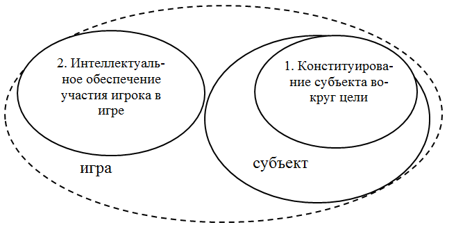
Схема 1. Сущность интеллекта
— Интеллект — это частный случай решения проблемы конституирования субъекта вокруг цели, а также обеспечения участия игрока в игре. Прочтения или рассказывания рассказа, а также разворачивание в таком рассказе в качестве как-рассказа.
Упрощенно предположим, что «движение» может быть в двух вариантах: внутри игры[99] (экстенсивное) и с помощью целеполагания[100] (интенсивный способ).
Способы развития:
— Схема 2. Путешествие через движение к цели, которая «больше», нежели вчерашние интересы глобальных представлений[101] для данной среды, то есть формирование «нового направления», где происходит снятие всех предыдущих противоположностей и проблем.
Схема 2. Интенсивное развитие через целеполагание
— Схема 3. «Конкуренция» или развитие через противостояние и устранение другого, или игра[102].
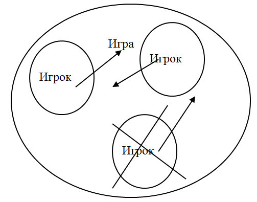
Схема 3. Экстенсивное развитие через распыление другого
«Активность» знает и первый, и второй способы разворачивания[103]. На различных участках могут происходить и те, и другие формы «оформления». При этом стоит отметить, что «конкурентный» (экстенсивный) чаще всего связан с замораживанием первого способа рассказывания и переходом к активности через «другое расширение». Хотя, скорее всего, первое не исключает второе, и наоборот. Чаще всего, когда иссякают собственные мысли, все усилия перенаправляются на внешнюю активность, при этом, когда исчезает последняя «вибрация» внутри, «рассказ» обычно завершается.
Если в первом случае происходящее движется к целой мысли, пытаясь стать активным-целым и желая при этом получить новое оформление или стать чем-то другим, то во втором случае игроки желают ограничить рассказ, желая стать «крупнее» за счет «другого». При этом «ни-некто» не ставит перед собой задачу перейти «к другой форме существования», точнее, о такой «форме» ничего неизвестно.
1.4. О телеологическом субъекте и цели ⇑
Печально я гляжу на наше поколенье!
Его грядущее — иль пусто, иль темно,
Меж тем, под бременем познанья и сомненья,
В бездействии состарится оно.
Богаты мы, едва из колыбели,
Ошибками отцов и поздним их умом,
И жизнь уж нас томит, как ровный путь без цели…
М. Ю. Лермонтов, Дума. 1838 г.
Поговорим о каком-то телеологическом субъекте. Рассмотрим такое досужее рассуждение — в «присутствии сознания» «представлены предметы и их атрибуты»[104], а остальное присутствует только как мысль. И такая мысль «действительна» только тогда, когда есть «стремление», которое объединяет все это в нечто концентрированное или в субъект[105], то есть система «понятий» и разрозненных вещей (мыслей) должна иметь[106] цель, иначе она не существует как то, о чем можно говорить как о «реально действующем и существующем»[107]. При этом нужно говорить не просто о бытовой и обыденной цели; возьмем это слово в его другом значении.
Вокруг цели[108] концентрируется субъект[109]. Субъект через рассказывание и пересказывание получает конкретизацию, так возникают такие очередные слова, как культуры, периоды, эпохи… — неважно, это только не-мысли[110]. Жизнь слова-субъект — это целый процесс, который проецируется в «пространство» и происходит «во времени».
Части могут существовать сами по себе. Но как найти способ сделать так, чтобы все происходящее (каждый акт) складывалось в «здание-со-знание», при этом являясь разделенным во времени и пространстве по образу и фазе, имея триллионы конкретных и отдельных особенностей и качеств, которые разделяют «это» на «кварц»... Так вот, «мечта» или «идея конструкции» — это и есть то, что объединяет все «это» в нечто, то есть существует единственный способ сделать так, чтобы «все это» воспроизводилось в «нечто» — нужно дать «точку» или, по-другому, «слепить интенцию вокруг нее». При этом «такое» не отрицает существование и того, что выходит за границы такого и устремляется к другим горизонтам.
Цель — это то, ради чего существует субъект и другой субъект и то, куда он движется, и то, во что он хочет преобразовать себя и среду. Отсюда — мечта или это то, «что будет строиться и к чему он будет стремиться». Цель — это стремление к универсуму, то есть цель включает в себя и движение к идеалу, и этот идеал[111]. Цель — живой инструмент. Это не статическое требование чего-то! Это большее — это процесс. Разворачиваясь, цель становится системой понятий, ценностей и системой жизни.
Цель — это то, для чего существует данный субъект. Это то, зачем он нужен? Какова его миссия? Почему этот, а не другой? Что будет сооружаться? Куда идти? Зачем все это?! В чем смысл такого или другого бытия? Цель определяет и формат субъекта, и его параметры. Цель конституирует содержание субъекта, но при этом сам субъект может «быть и для другого», то есть ограниченно входить в иную систему смыслов как часть, не всегда понимая это.
«Все», что движется к цели, становится субъектом. И какой является цель, таким и становится «рассказ». То, что находится в среде, концентрируется для движения. Так формируется мысль. Если мысль исчезает — субъект рассеивается.
Цель, взятая не в обыденном значении — это не бытовое стремление, это система знаков, символов, законов, значений, и смыслов; это то, что позволяет «длить» реальность. Отсюда возникает необходимость в некоей энергии или мыслях, без которых все чахнет и распадается, то есть цель понятна, но она не обыденна, она запредельна. Цель невозможно определить окончательно, то есть попытка дать последний ответ — «что есть цель?» — приводит к новым и последующим ответам, и так в бесконечность, пока есть мысль.
Как цель – гипотетически, в вульгарном значении – может быть взято любое стремление — жизнь, развитие, дружба, господство, обогащение, спасение, освобождение, борьба, уничтожение, преобладание, грабеж, ненависть…[112] Но какую или другую цель примет субъект и сможет ли он себя вокруг нее определить — это «загадка».
Оценивая «цель», всегда возникает вопрос о благе, то есть «что есть благо?», а «что — его противоположность?», причем можно ли обсуждать существование такой «противоположности»? Какая цель может быть тем, что есть благо? Почему она есть благо? А не его антитеза? При этом это благо — для всех, для себя или благо само по себе, то есть некое абсолютное благо? А если цель относительна, то есть она действительна и является благой не всегда и не везде, а только на определенном «участке» или для определенной части, то разве можно утверждать, что эта часть (активность) имеет право навязывать ее «мыслям»?
В границах вопроса «о благе» и «его противоположности» правомерными становятся вопросы о прогрессе — регрессе; развитии — упадке; созидании — разрушении; и даже о его некоем диалектическом снятии в каком-то другом «рассказе о рассказе».
Далее в границах вопроса о «структуре» блага можно поговорить «о субъекте», о том, «что есть субъект?» и «Субъект». Благ ли он? Какова его природа? Он — субъект? Бессмертное существо? Эманация Создателя? Создатель? Зверь? «Робот»? Его нет? Объект? Он — другое? Или же не нужен вообще?
Затем возможны бесчисленные упрощенные умственные комбинации и построения, которые, правда, ничего не говорят ни о «сущности!» блага, ни о его «причине!». Например, признание существования добра и зла как действительных сил требует признания и за присутствующими подобного деления. Но кто будет тем, что есть благо? Кто будет его представителем в мире света и(или) тьмы? Может, особый род? Улучшенная субстанция? Или собрание представителей? А кто будет тем, что не есть это благо? Все другие? Почему? Потому что у них нет сущности, не такая сущность, не тот создатель, не-те-не-то … — они порождение «противоположности блага», в части или в целом — это без разницы! Отсюда вопрос о возможности взятия «такового» как стремления для, о «структуре» такого «конструкта» и его будущем существовании в действительности. Другая интерпретация — это очередное противостояние тех, кто против такого и(или) другого, где видится значение «представителя» по-другому и «блага» в таком значении… Возможна и следующая, одна из комбинаций, где действительным является представление о том, «что все есть только благость, а обратное — это не его противоположность, а его извращение и непонятость», которая требует признания за любым «проявлением» его сущности, то есть «мир благ», ибо то, что его породило, не может (если оно благо) породить иное, нежели его же сущность, а все видимое как зло — это искривление, а не субстанция. Отсюда любой имеет право на «исправление». И таких, и других спекуляций, где разум будет проверять свои возможности, воссоздавая «мир в себе», может быть бесчисленное множество. Причем разговор «о благе» далек от «простых» схем, которые ни в коем случае не раскрывают смысла «этого всего», который находится по ту сторону комбинаций разума.
Конечно, можно все (очередной раз) упростить, «смешать краски» и не «напрягаться», сказать, что «Никто не знает, что есть благо!», а так как «никто не знает», то «его и нет!»[113]. Поэтому вопрос «о благе» снят, он не имеет смысла, и с благом все решили — это выдумка и слабость. Отсюда все точки зрения — это положение, место, происхождение, история, характер, предрассудки, страта, правила, формация, субстрат… Скрытого нет или оно, как и все остальное, не определено! А субъект? А субъект, возможно, это все, что осталось «после»… это сумма эмоций и привычек… это характер и желания… это юридический «предмет», мозг, личность, вещь среди вещей, которая абсолютно ничего не знает о благе и(или=) истине! Подобное не имеет смысла, кроме того, это трата времени для тех, кто занят самим собой, точнее, тем, что осталось «в очередном» «после»[114]. Конечно, в обычную «героическую» эпоху немало было разного, но это все пустое… смешно. Позиция субъекта или того, что от него осталось «после», зависит не от его выбора, а от его «местоположения»! Отсюда выстроенное вокруг такого, отсюда форма и проявления, так сказать, «продукт» и «производные»[115]. Но, как уже не раз случалось, те, кто в-рассказе, что будет «быть» «после», скорее всего, станут этим «после», то есть при(в)станут к нему, а вместо него станет и «новое» «другое» «после».
Подобное, а в сокровенности другое, подхваченное много раз, находит свое новое отражение-воплощение, но как оно связано с началом — это «загадка». Упрощенно можно сказать, что это-другое-одно-из-многих «представлений о сущности блага»[116], взятое затем в качестве мысли. А затем реализация и движение к такому — это целая «вибрация», которая порождает все: и другого, и остальные его проекции. Так устанавливаются и происходят мысли, другие мысли, цивилизации, культуры, эпохи... Конечно, не стоит все «это» упрощать, «такое» не сводится к комбинациям или схемам, на самом деле «источник» блага, «сущность» блага, а затем и «стремление» — это не технический ответ, и это навряд ли выдумка. Источник — это «странная» загадка, а путь к нему — это не просто спекуляция, «цена» такому — это «пройденная» «жизнь». Попытки схематизировать источник ведут к новым комбинациям, при этом сам источник (как загадка) остается за границами любых комбинаторик.
Цель-как-благо, к которой стремились «соответствующие» субъекты в различные периоды, были «как бы разные»[117]. Допустим такие, как -Поиск-Путешествие-Борьба-Освоение-Ожидание-Становление-Преобладание-(как)Уни-версум-Освобождение-Перерождение-Спасение-Заверше-ние[118];… и другое затем как Надежда, то есть различные пре-дельные акты-колебания «духа»[119].
Цель может жить дольше своих последователей. Чаще всего масштаб цели игнорирует все качества участников. «Этнические» «очередные-эллины» могут исчезнуть, но «варвары», восприняв цель, будут делать то же самое, и то, что будет происходить дальше на протяжении последующих «актов», будет «тем же».
Цель игнорирует место и время, а также и другие условия. Неважно, что это – телесность, сумма интересов или территория города, холмов, побережья, гор, степи, островов... континент… и далее по списку, вплоть до неизвестного значения, названия, места, предмета, слова, смысла, мысли и цели. С той или иной спецификой стремление-стержень — тот же, и мысль может быть одна и та же!
В какой-то момент происходит так, что цель становится мечтой, и наоборот. И «Гели-!» как «происходящее», и «Гели-!» как мечта и цель.
При этом цель может снять все другие проблемы и противоположности. Какая разница, кто из нас «-кто-что», если мы несем этот «…» или привносим «это» в каждый уголок «рассказа» и каждой мысли вне зависимости от ее начала. Поэтому все они — «мысль». И все другие противоположности, мнимые и действительные, … исчезают[120].
В рамках цели правомерно говорить об античности, капитализме, буржуазии, революциях, терроре, огораживании, прибыли… и другой пустоте=(—это). Отсюда, если и существовал некая вибрация (вырваность), нужно понять, почему и для чего это было сделано или почему так произошло, то есть какова цель стремлений или к чему стремился тот субъект, каким он был, чего он добивался? Иначе это не история духа, это история другого…, но и такое тоже не стоит сбрасывать со счетов.
Чем «стремительнее»[121] цель, чем она доступнее «уму», тем эффективнее это работает. Предположительно субъект (часто[122]) — существо осмысленное и не может существовать без целеполагания, то есть о-смысления. Как и все остальное, что определяется духовной точкой — субъект.
Никто не отменяет возможности существования для «одного» субъекта разных, но не-и-противоречащих стремлений[123].
Цель может объединить вместе различные мысли, даже если у них разные приватные интересы и стремления. Так, вместе могут дружить непримиримые части, желая простить общего «другого» или добиться чего-то важного для всех, конечно; о стабильности такой мысли нужно говорить отдельно.
Цель — это гипотеза, окончательный ответ не нужен. А что же тогда на самом деле является «точкой стремления» — противостояние, стремление выжить, борьба, эгоизм, жажда наживы, ненависть, всепоглощающий ужас, желание владеть и распоряжаться, чувство превосходства и исключительности или обратное всему этому? Отсутствие разума или его избыток? Заблуждение, помешательство, аффекты? Слабоумие — это милитаризм или пацифизм? Или сам вопрос — показатель слабоумия? Созидание или разрушение? Добро или зло? А есть ли этот дуализм? Присутствует ли подобная антиномия очередных огнепоклонников? Или это все вымысел? Но как вымысел может быть тем, что есть? «Кто» же все-таки всем движет? Кто «стоит» на стороне этого и того «добра»? Кто из присутствующих является служителем другого врага? Если все стоят на стороне добра, то кто же с той стороны? Что было там, на той заре? Что будет на закате? …
Любой субъект должен осознавать себя в целом и жить ради чего-то — иметь «понятную ему», не всегда осознанную в простом значении цель, которая его конституирует в качестве мысли. При этом субъект не исключает субъект — телесность тут отсутствует…, есть только мысли… Монолит субъекта всегда значительней простых понятных сумм присутствующих — включенные-исключения исчезают за горизонтом прошлого-будущего.
«Цель», та ее часть, которая находится «в границах осознанного», становится тем, с чем «можно работать». Работая с «этим», возникает схематическая возможность «работать и с субъектом», а также и с его «технической судьбой». И такое всегда находится на грани спекуляций, так как всегда есть загадка, а не просто парадокс. И раскрытие такового через схемы — это умствование, а не ответ, без понимания такого возникает желание стать большим, нежели быть возможно. Кроме мысли «о цели и субъекте», есть и многое другое, то есть это не тотальная совокупность всего, а это только ограниченно-вырванная из целостности мысль. Но важность подобной темы несомненна. Поэтому возникает проблема оценки тех «инструментов» и тех «методик», которые позволяют «работать с таковым». При этом важной также остается тема того, что находится «с той стороны», но проговоренный инструмент имеет к такому только косвенное отношение.
1.5. Субъект и другое ⇑
Для того чтобы «быть», субъект должен «подтягивать» из «среды» «все» для постоянного формирования себя-как-активности. Отсюда обязательными должны быть различные «мысли и формы» «подтягивания» «среды», то есть для «созидания себя» субъект «преобразует-втягивает» среду. И такое преобразование в различных изощренных смыслах может звучать в виде слов: жизнедеятельность, деятельность, активность, движение, влияние, эксплуатация, разрушение, эволюция, поглощение, уничтожение, преобразование, повторение, изменение, воздействие, развитие, улучшение… «среды-другого», иногда ставшего что-субъекта, то есть уже противостоящего что-активного. Отсюда отказ «от такого» может подразумевать только отказ от субъектности. Нежелание «преобразовывать» среду предполагает отказ от существования себя в качестве субъекта. Субъект в результате движения к себе «втягивает» среду, но такое «втягивание» не есть цель или экзистенция. «Предполагаемое» наличие экзистенции предполагает свободу выбора-даже-не-бытия или любого-другого-бытия-для-себя.
При этом, как всегда, представление о субъекте, то есть о целостной-автономной-атомоидальной-монадоидальной-активной[124] сущности-существования, предполагает необходимость существования «другого» (активного или нет — это не всегда не-важно), которое будет либо иметь, либо не иметь мысленную форму. При этом то, что уже будет иметь субъектную оформленность, будет активно противостоять желанию другого включить себя в себя в качестве сущности, понимая присутствующее-себя как существование.
Там, где субъектность будет спускать вплоть к самой простой мысли или снова будет устремляться в другие «пространства», ни в коме случае не может отрицаться, а, наоборот, будут предполагаться мысли о различной (какой-то) солидарности[125], разграничении интересов, правил игры внутри «какой-то мысли». И такое может становиться даже определенным обязательным «законом»[126], который может быть преобразован в какой-то «рассказ»[127], который может определяться в последующем любым словом, которое будет в последующем пере-раскрывать эту мысль, так сказать, очередная попытка преодолеть «…мысли»[128], при этом в тех повествованиях, где отсутствует представление об атомо-образности, таких проблем нет. То есть там, где нет отдельно-стоящего ума, а присутствуют постоянно повторяющиеся акты, каждый из которых не связан с предыдущим, тогда такие вопросы могут не возникать, или они понимаются иначе.
Самая «значительная установка» солидарности, то есть «аксиоматизация автономии другого» — это извечное требование «чтить другую автономию так же, как и свою». Такое установленное и проговоренное в разных вариациях бесчисленное множество раз является абсолютным основанием для остановки-фагии, но такое не может быть «окончательно достигнуто» включенными мыслями, потому что «для того, чтобы быть», субъект должен «работать» «со средой». То есть, чтобы быть в качестве «как-субъекта», активному приходится «втягивать среду», но, с другой стороны, чтобы присутствовало что-то большее, чем «частная мысль», то есть поли-мыслие (как-основание), нужно остановить фагию. И такая двойственность — это обязательная сущность (проклятие) любого субъекта.
Автономия призывает к таким «существованиям», как честь, честность, достоинство, она требует проявлять доблесть и стойкость, борясь с теми, кто бросает вызов автономии, а, с другой стороны, есть и включение, которое тоже как автономия требует защиты, преклонения, ну и другого, и тут тоже есть и долг, и служение, и между автономией и включением нет противоречия в действительном состоянии (автономия = вкуда = включение). Причем автономный всегда включен «куда-то». При всем его желании видеть себя как само-цель, как достаточность, как-полноту — это только «видимость себя», а, с другой стороны, «автономия = включение», и это противоречие требует понимания отсутствия возможности уйти от субъектии с помощью какого-то огораживания, эгоизма, примитивизации свободы воли ..., утилитаризации этики, ущербного индивидуализма. На самом деле «уход от включения = устранение автономии», то есть это автаркия у киников или устранение индивидуализма у других пробужденных, то есть предполагается «выключение», а не какая-то очередная «радикальная автономия»[129]. Такое действительное «выключение» — это «сон для включенных», а «для исключенного это форма присутствия».
Противоречия между мыслью и не-мыслью могут быть, но как это можно продумать? Чем значительнее становится разворачивание автономии, тем «более невыносимо» все то, что посягает на такую автономию, то есть субъект = автономия, и все, что направляется в ее сторону, — это мерзость и враг. Отсюда при становлении «существа» автономии идет параллельная, постоянная «схематизация», «абстрагизация», «притушение», «маскировка» фагии. Субъект не может отказаться от фагии, иначе он перестанет быть как-субъект, но усиливающаяся автономия требует постоянной значительной маскировки фагии от ума активного.
Нужно точно предположить, что «обязательная солидарность»[130] является необходимым условием для создания чего-то больше, чем отдельная мысль. При отсутствии каких-либо «законов» солидарности возможность существования чего-то большего, чем отдельная мысль, становится невозможным. То есть, с одной стороны, монадоидальность мысли — это способ присутствия активного развития, творчества и другого, а солидарность — это способ создания возможности политеизма монадоидальности[131], которая позволяет быть разным мыслям, которые одновременно, каждая сама по себе, при ее автономизации позволяет создавать условия для активного творчества. Отсюда рассказ в обязательном порядке предполагает и автономизацию мысли, и ее солидаризацию по отношению к другим уже после первого акта присутствующим монадам. Иначе существование монадоидальности перестанет быть возможной.
При этом «выдирание» себя из среды в качестве какой-то автономии — это значительная великая загадка для активного интеллекта, то есть, как такое вообще стало возможным? При этом остается открытым вопрос о присутствии такой субъекности у любого другого. При этом присутствующая субъектность обязательно предполагает самосубъектность (само-рассказ)? А у того, у чего уже присутствует субъектность, она может «быть разной»? Субъектность «искусственна» или это обязательный «результат становления»? Можно ли «описать структуру» такой субъектности? Насколько «субъективизация среды» имеет право быть? При этом любая субъективизация предполагает то, что «для» ума «не существует ничего, кроме мысли»...
То, что стало субъектом, как всегда будет иметь разность содержания. В нем будут всякие мысли. Эти мысли могут иметь экзистенциональную форму и по-разному относиться к участию в рассказе. Поэтому желание достичь одинаковости «во всем внутри содержания» в субъекте — это, конечно, благостное стремление, но оно каждый раз будет сталкиваться с противостоянием этому со стороны присутствующего «пространства»[132], которое в любом случае разделяет мысли на монады. При этом только определенная цельная мысль может соединять определенную разность в нечто общее в конкретном акте. И такой акт может конкретным образом преобразовывать сущностную определенную монадоидальную экзистенцию в другое. А затем все повторится с самого начала.
Предположим, что то, что является актом-субъектом, а не просто «тем, что есть», (аксиоматически) воспринимает «пространство»[134] как игру[135], таким образом становясь участником какого-либо противостояния[136]. В таком случае происходит снятие представления «о мысле-субъекте и его цели» и возникает мысль «игрок», цель которого не «поход к чему-то новому через включение всего что-», а «доминирование в игре через размышление других мыслей», которое может включать различные данные: и игроков[137], и стадии игры, и уровни, и различные формы противостояния, и все остальное.
— Субъект — это тот, кто выстраивает себя вокруг своей цели.
— Игрок — это уже участник противостояния, где общая цель участия — переиграть в игре. При этом то, что происходит в игре, может передаваться туда в стержень и становиться началом и цементом для других процессов.
Установим абсолютную цель любой игры — выиграть, победить, переиграть всех, размыслить других. А для этого в игре надо остаться единственным игроком. Причем слово «выиграть», в зависимости от «вида» игры, игроков, их внутренней конституции…, будет иметь различное значение[138]. Может быть и так, что игра только в абсолютном значении довлеет к абсолютной победе.
Отметим, что действительная игра подразумевает различные простые и сложные манипуляции как с правилами игры, так и с игроками. Это также вовлечение в игру различных технологий, методик, ресурсов, предметов, «субъектов», «субстратов», «сущностей». Чем «выше уровень» игры, тем сложнее ее содержание. Но все же для участия в игре и оценки того, что происходит, необходим простой «предметный» «теоретический» аппарат, который бы свел игру к простым и понятным составляющим. Подобное в будущем позволит «управлять» игрой (действовать в ней осознанно) в качестве субъекта, а не «предмета».
В разделе не будет рассматриваться линейная игра, описываться причины выигрыша или проигрыша того или иного игрока, а также количество вариантов ходов… упростим все до «схематических частиц». Опишем самый простой вариант многомерной игры.
Предположим — 1. Стадии-гипотезы жизни игры:
1.1. Формирование — в «инертно-разряженной» среде возникает формирование новых глобальных для данной системы игроков. От 0 и до… Х.
1.2. Стадия отрыва — игроки ищут способы для того, чтобы усилиться. Для этого используются как внутренние, так и внешние ресурсы. Усиление идет за счет поглощения соперников и с помощью союзов. Таких стадий может быть множество до тех пор, пока игра не перейдет к стадии «игра на троих».
1.3. Игра на троих — это более стабильный этап игры по сравнению с предыдущими стадиями противостояния. Возможные выигрышные комбинации: 1+1>1; 1+1<1; 1>1>1.
1.4. Игра на двоих. Выигрышные комбинации: 1=1; 1>1; 1<1. В любом случае, игра на двоих — это ограниченный вариант, точнее, нестабильный случай игры на троих .
— Противостояние двоих всегда предполагает постоянное формирование 3-го игрока, если среда, в которой есть игроки, не поглотила всю -сферу. При удачном формировании нового-третьего — продолжение игры с фазы 1.3.
Разрешение игры на двоих:
— проигрыш одного из игроков после какой-то прямой встречи;
— разложение одного из игроков в результате длительного ожидания[139].
В любом случае игра всегда предполагает усиление за счет мелких союзников, которые не перешли на следующий этап 3-го игрока, или вливания внешних средств из верхнего уровня игры.
1.5. Стадия доминирования — это выигрыш одного игрока.
1.6. Затухание игры. В части или в целом. Если некуда расширяться, то может начаться распад игры в обратном направлении, то есть распад игрока на части и дробление.
Гибель игрока может произойти в результате:
— старения — постепенное затухание до точки «ноль», а затем (1.7.) — «новая стадия формирования»;
— саморазрушения или (1.6.1) «процесса распада»;
— разрушение среды и исчезновение игрока, после или в результате чего возможно 1.6.1 или 1.7 , а возможно и полное затухание жизни в определенном отрезке действительности.
1.6.1. Процесс распада или Модель сползающей игры. Данная фаза игры может растянуться на несколько десятков циклов, а иногда и их сумм. В конце этой стадии может быть и ( 1.7) «новая стадия формирования», а возможно и полное затухание «жизни».
1.7. Новая стадия формирования. После обрушения и смерти может возникнуть новая стадия, то есть новые игроки и новые правила, чаще всего — забытые старые. Затем новый кругооборот игры, но не начало истории, так как ситуация «ноль», когда нет предыстории, фактически невозможна в ситуации, где есть история.
2. Элементы игры.
— Соразмерных игроков одного ранга, от 0 до…Х, будем изображать целым или символом «а».
— Игроки других рангов.
— Внутренние цели игроков, которые конституируют их.
— Цель игры.
— Особенности исторической среды, которая является продуктом предыдущих игр и истории вообще[140].
3. Модель возрастающей игры [141] «одинаковых» игроков, то есть таких, у которых один и тот же конституирующий рассказ.
a<a>a<(a+a+a)>a<a+a>a<a+(a+a+a+a)>a>a<a<a+(a+a+a+a) + ∞[142]
a>a<a>a<(a+a+a)>a<a+a>a<a+(a+a+a+a)[143]
a<a>a[144]
a<a[145]
0[147]
4. Модель сползающей игры схожих игроков.
a<a[149]
a<a>a[150]
a>a<a>a<(a+a+a)>a<a+a>a<a+(a+a+a+a)[151]
a<a>a<(a+a+a)>a<a+a>a<a+(a+a+a+a)>a>a<a<a+(a+a+a+a) + ∞[152]
5. Обрушение игры одинаковых игроков .
a
a<a>a<(a+a+a)>a<a+a>a<a+(a+a+a+a)>a>a<a<a+(a+a+a+a) + ∞
6. Модель возрастающе -убывающей игры .
<a>a<(a+a+a)>a<a+a>a<a+(a+a+a+a)>a>a<a<a+(a+a+a+a)
a>a<a>a<(a+a+a)>a<a+a>a<a+(a+a+a+a)
a<a>a
a<a
a
a>a<a>a<(a+a+a)>a<a+a>a<a+(a+a+a+a)
a<a>a<(a+a+a)>a<a+a>a<a+(a+a+a+a)>a>a<a<a+(a+a+a+a) + ∞
— Возможно ли перескакивание через стадии? Во время роста — нет. А во время сползания — да.
— Сколько возможно циклов роста и упадка? Скорее всего, до тех пор, пока не иссякнут ресурсы среды, то есть «знамя» может быть подхвачено множество раз.
7. Иерархия игр — не имеет смысла или не существует. Состоит из одинаковых игроков разных поколений. Каждая новая стадия многомерной игры пресекает все предыдущие. Все игроки прошлых состязаний встраиваются в новые союзы.
8. Способы усиления игрока.
— Союзы — среди игроков одного ранга-(отрасли) или с игроками предыдущих стадий. Переход на следующий уровень возможен за счет укрупнения, вбирания в себя других игроков.
— Усиление за счет внутренних или других ресурсов.
9. Условия, которые влияют на кардинальное изменение хода игры. В любой момент игра может исчезнуть совсем или измениться, или начаться с любой из предыдущих стадий.
— Вмешательство «внешнего» игрока — всегда довлеет над игрой и может перенести игру на любой из ее этапов.
— «Катаклизмы и кризисы», вызванные игрой или средой, то есть всегда есть условия и обстоятельства, которые могут разрушить или изменить игру.
— «Гений» — в игре всегда присутствуют неизвестности отдельных активностей, что может кардинально изменить или переломить игру.
— «Случай» — также влияет на игру.
— «Характер» игрока или его составляющих — это определенная внутренняя структура активности в целом и ее частей, которая также влияет на ход игры.
— «Судьба» — то, что невозможно понять, но то, что может быть. «Смерть» — тоже часть акта судьбы.
— «Условия» среды — сложившиеся ранее, существовавшие всегда… Это и «мысли», и «сущности»…
— «Неизвестное, загадка» — может быть тем, что существенно меняет все.
1.7. Схематический субъект и проблема «динамики» ⇑
Расширим представление о слове «субъект», данное ранее, и предположим, что такой путешественник должен или может иметь определенную содержательность. В нем должны существовать установленные механизмы, которые позволяют стабилизировать его «жизнь» и «движение».
Рассмотрим Схему 4, которая в определенном смысле недостаточно, как и любая схема, отображает «то, что есть». Подобное присутствие для своего существования в реальности должно быть наделено значениями, которые как бы цементируют «в нечто» всю субстанцию или содержание. Такие мысли и работа с ними, понимание их, продуцирование их в среду… — это задачи различных концентратов[153], которые осознанно видят свое продолжение только в границах такого существования[154].
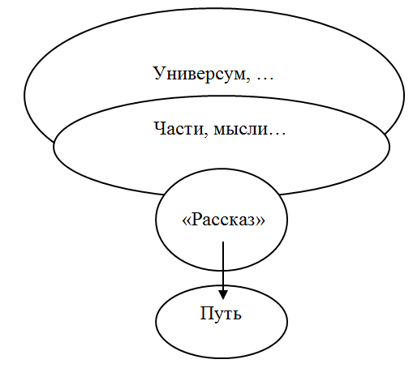
Схема 4. Схематический субъект
Предположенные в Схеме 4 «субстанции» — достаточно условны. Причем «границы» между установленными «частями» в классическом варианте существуют только так, как это показано на Схеме 5 , то есть это все «единый» конструкт. При этом стремление находится внутри образования как конституция.
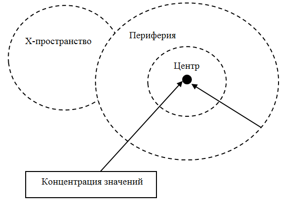
Схема 5. Смысловая конституция
Оценим Схему 5 : центр, обочина, контуры, границы, метки, рамки, горизонты, различные зоны… и другое нужно понимать следующим образом: чем ближе к «точке отправления» ..., тем ближе к центру, при этом другие показатели не имеют решающего значения. Чем дальше от значений, тем ближе к обочине. Там же, где «смысл» — это эфир…, это уже другие пространства.
Рассмотрим такие суждения: кто есть кто? Куда все это движется? Есть ли смысл и логика в происходящем?[155] При этом можно отрицать существование рассказа в части или в целом. Но как все обстоит в действительности? А что есть в «наличии», кроме таких «рассказов»?
Рассуждая от обратного, отметим, что телеологический субстрат, описанный в разделах ранее , сам по себе не наделен способностью шагать к своему предназначению, навряд ли сам по себе способен вырабатывать такое стремление; он может его воспринимать, понимать, жить ради него, но не вырабатывать или воспроизводить, для этого необходимы другие механизмы. Причем можно предположить, что сами «первичные» «устремления», их начало находятся в далеком и неизвестном «прошлом», и в том, и в другом.
Рисуя мысленную структуру субъекта, в нем можно предположить какие-то составляющие[156], но интересным в контексте «поисков» «источников» «путешествия» является предположение о гипотетических составляющих. Такие части — это эфирные образования, которые имеют определенные «мысли о судьбе всего с…» и «о судьбе вообще». Такие мысли могут иметь фундаментальное содержание и двигаться в глубину, «к вопросу о благе», или обращаться вокруг восприятий и перспектив различного бытия. Но в любом случае такие мысли «не-могут» ставить под сомнение сам вопрос существования «судьбы», «предназначения» и того, что находится «с той стороны».
Мысль «рассказ» — это фикция, функция, структура и одновременно ничего из этого. «Рассказ» — это производное от воображаемых частей или это также способ их инобытия. Иногда значение «повествования» сужают к определенной «точке», но это не совсем так. «Мысль о рассказе» намного шире — это и место консолидации интеллекта, и способ выработки мысленных фракций, и место обсуждения тотальных для данного или другого тем[157], и, самое главное, это источник, в котором воспроизводятся те мысли, которые позволяют длить действо. Представляя такую мысль, можно предложить разные «абстракции». Отметим, что производство такого явления может носить структурный или умозрительный характер. Может являться просто смысловой конструкцией, а может иметь и более понятную оболочку и работать по определенной схеме таким образом, чтобы на выходе иметь конкретный «концентрат». Причем подобное «производство» может иметь и направление, и структуру, и управляемость, и повторяемость. Это могут быть открытые представительства и закрытые активности, то есть «содержание» будет зависеть от потребностей динамического повествования и т. д.
Интеллект в таком формате нужно понимать как рабочий формат такового или его другой способ существования. То есть иногда, в узком значении, интеллект — это и есть такой конструкт, и иногда интеллект — это производное от него (его инструмент). А иногда все будет зависеть от фазы, циклов и потребностей.
Стоит предположить, что интеллект — это развитие «представления о рассказе», то есть это механизм, который использует все возможности для быстрого и эффективного решения телеологических и, возможно, других «задач». При этом стоит предположить или даже утверждать, что такие-перечисленные конструкции присутствуют только в активности, а вне сосредоточения такое недействительно и может иметь только мысленные представления о себе.
2. «Карты» и «периоды» ⇑
2.1. Рассказ и периоды ⇑
Рассказы происходили и происходят в «локальных» и «отраслевых» происходящих. В каждой части возникают свои ставшие мысли и не-ставшие повествования. Начнем оттуда, где речь идет о каком-то «быть».
Поверхностно рассмотрим ряд обычных повествований[159]:
…
3) Новый рассказ. Первая мысль уже «точка». Формирование второго повествования как претендента на первое место. Первая против второй мысли. Победитель — игрок с другой части «истории», занявший первое место в результате уставания бывшего первого и нового второго рассказа.
В предыдущий период, после размышления второго, идет формирование новых претендентов:
— Формирование претендента на первое место — выход его на общую «площадку» в качестве единственной мысли.
— Еще один претендент. Выход этого рассказа на общую «площадку».
— Формирование претендента на старой «площадке» и его выход на арену в качестве нового мощного разговора. Противостояние. Противостояние. Завершение формирования.
— Первая мысль создает комбинации, пытаясь понять, кто претендует на первое место, выясняя, кто второй, кто третий и как устроить удачную комбинацию. В результате ряда «договоров» возникает коалиция первого с бывшими двумя вторыми, которые до этого были им успокоены, против нового второго и его суммы.
— Столкновение первого и второго вместе с союзами и коалициями.
— Истощение игроков.
— Усталость части повествований.
— Замена ослабевающим первым истощенных участников на нового. Неудачные попытки второго включить новых. Проигрыш второго.
— После завершения столкновения приглашенный игрок, по факту полного уставания всех участников, занимает первое место и становится ставшим.
4) Новая история. Первый против формирующегося второго. Победитель — первый. Второй успокоен, но не устал настолько, чтобы выбыть.
— На осколках бывшего третьего идет формирование претендента.
— В результате ряда комбинаций, ходов, обстоятельств на осколках бывшего второго и частях игроков других масштабов — формирование нового претендента.
— Усиление новых претендентов на первое место. Включение ими различных осколков, формирование коалиций.
— Столкновение второго и третьего. Включение в противостояние первого. Взаимное истощение.
— Победа над вторым рассказом. Первый подтверждает становление, но не происходит истощения третьей мысли. Третий становится вторым.
1) Новая история, продолжение старой по-новому. Вторая мысль против первой. Победитель — первая, а третья занимает место второй.
В это время происходит обрушение старых комбинаций. Первый игрок против самого сильного нового рассказа. При этом сформирован третий.
— Попытка перестроить рассказ: второй + третий > первого — недействительна.
— Новая попытка перестроить рассказ: второй + третий > первого игрока — тоже недействительна. Такое тоже не выгодно, потому как в итоге второй кинется на одинокого третьего.
— Встреча второго и третьего, в результате размытие второго. Третий занимает второе место, а второй уходит в списки союзников.
— Разсмысление второго. В результате в дальнейшем бывший второй этой формации будет принимать участие в игре в качестве инструмента, а затем станет второстепенным участником «новой истории» и примет участие в нескольких масштабных встречах.
5) Новая история. Первый рассказ против второго. Победитель — первый. Третье место свободно. Различные комбинации. Попытки устранить друг друга с помощью и опережения, и микро-актов, и не-стабилизации обстановки в различных частях. При этом возникают попытки создать коалиции и союзы, которые бы позволили усилиться и превзойти других.
— Обрушение второго.
2) Новая история. Новый второй рассказ против первого. Победитель — первый. В результате первый игрок становится ставшим, но ненадолго. При этом второй рассказ устал, но не растворен, то есть остается претендентом при будущих толчках.
Игра на двоих при невозможности разрешить комбинацию. Попытки остановить друг друга с помощью и опережений, и микро-актов, и не-стабилизации на различных пространствах. При этом возникают попытки создать суммы и концентрации, которые бы позволили усилиться и превзойти.
Попытка остановить второго с помощью суммы из первого и игроков с разным значением. В результате второй уходит со «второго места», он устал. После идет формирование претендентов на свободное третье, второе, ну и в последующем, если удастся забыть первого, то и на первое место.
6) —… Новый рассказ. Первый ставший. Идет формирование новых претендентов на второе и третье место. Идет формирование сумм и концентраций. Первый пытается воспроизвести удачную комбинацию и основать ход и активность против других мыслей. Первый ищет решение расставить других против всех и самому при этом не устать. Формирующиеся тоже пытаются создавать собрания. Ищут способы стать умнее, развиться и не исчезнуть в результате неправильных комбинаций и ходов.
7) —…
8) —…
…
Замечания.
— Случается, что те варианты разговоров, которые предполагались как основные, могут не оказаться таковыми. Можно и самого себя пересказать, как это случается постоянно. Иногда «активность» не может вытянуть и «что-то» отказывает. Иногда такой «субстрат» может «спастись», «поняв» другую «мысль», и тогда происходит как бы наслоение.
— Иногда «мысли, техники, практики, изобретения…» могут изменять ход рассказа.
— Бывает, что из неизвестного источника возникают новые «рассказы», которые в корне меняют происходящее.
— Всегда одновременно присутствуют и экстенсивные, и интенсивные мысли…
— При каждом новом раскладе возникают действующие с конституцией другого порядка, то есть с новым типом стремления. И другим надо под это подстраиваться или уйти.
— Всегда остается открытым вопрос «о случае, судьбе, гении и других... словах».
2.2. «Карта» в одной из точек развитых рассказов ⇑
Оформлений мыслей в рассказы может быть «бесконечное» множество. Можно представить то, что может быть в одной из множества точек существования любых форм присутствия. Предположительно «в циклах многих историй» может присутствовать вялотекущий ставший рассказ. Несколько примитивно схему можно представить, как это показано ниже (Схема 6) .
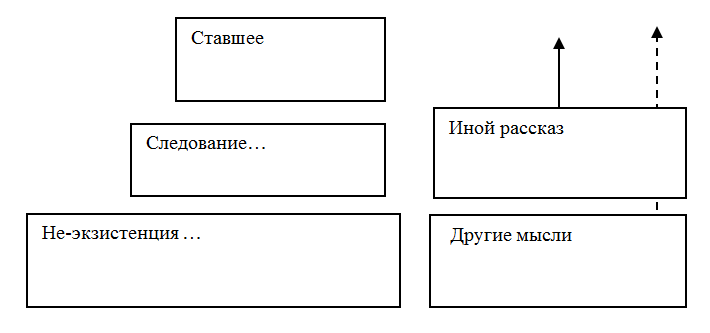
Схема 6. Когнитивная карта
Мысли и формы. Рассмотрим Схему 7 по-другому, а точнее, как постоянное мышление с включением форм.
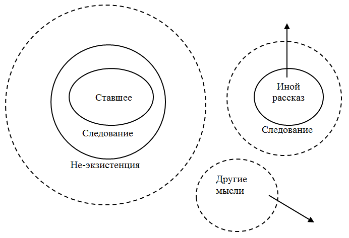
Схема 7. Мысли и формы
Неизвестный (Схема 8). Ставшее всегда мыслит о том, чтобы взять и помыслить нечто другое и предложить это в не-экзистенцию …
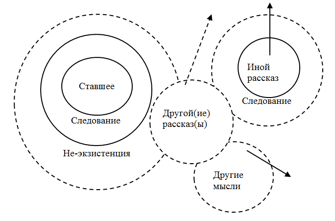
Схема 8. Неизвестный рассказ
Причем размеры повествования (Схема 8) должны соответствовать масштабу существующей задачи. Отсюда открытыми при таких размышлениях остаются вопросы: О чем будет повествование? Из каких стремлений его соединять? Что должно быть смыслом или не-смыслом?...
Само-рассказ (Схема 9). Чаще всего это означает конец всего периода. Но всегда есть надежда на такое или что-то другое. Но такое повествование, если оценивать огромный пласт рассказов, чаще всего приводило в итоге к полному пересказыванию и то, что есть вначале, может не быть в конце.

Схема 9. Само-рассказ?
Кроме того, ставшее, потому оно и ставшее, и его предыдущие истории только потому, что оно не пересказывает самого-себя. Методика чаще всего всегда бывает иной и заключается не в том, чтобы самому рассказывать, а наоборот, в том, чтобы позволять размножаться другим многим историям. Но в «рассказе» бывает всякое.
Стать общим повествованием (Схема 10) на очень важных условиях, при этом расширить не-экзистенцию.
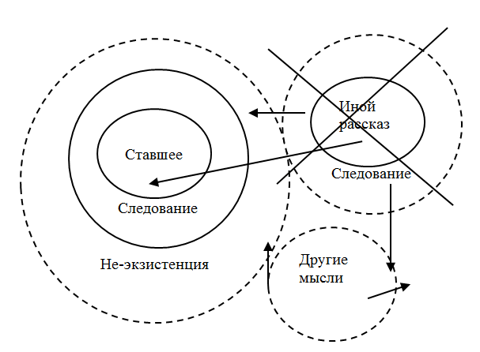
Схема 10. Стать общим повествованием
Перестать рассказывать (Схема 11). Подобное подразумевает автономию, сущее и т. д. Исход такого может быть каким угодно. Например, мысли, живя сами в себе, просто со временем будут пересказаны, и на их «обломках» возникнут новые другие рассказы и новые мысли.
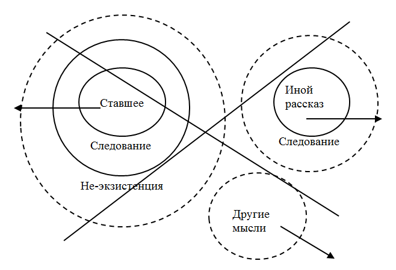
Схема 11. Перестать рассказывать
Проблема в том, что «быть так» не просто. Это связано с различными вопросами. Как всегда, все быстрее идет внутреннее уставание смыслов, кроме того, «цели» в таких условиях превращаются в самостоятельный рассказ со своим взглядом «как думать». Предыдущий рассказ остается, но с каждым актом ума все быстрее устаревает субстанция, которая завтра стремится к не-быть.
Рассмотрим ситуацию с точки зрения внутреннего присутствующего.
1) Рост, развитие и расширение ставшего.
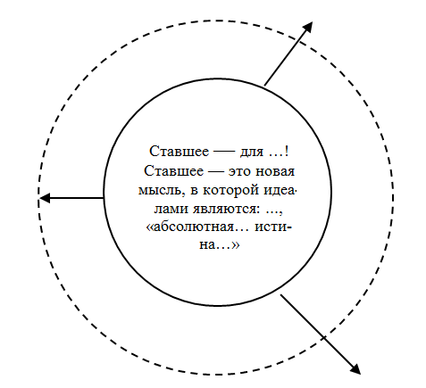
Схема 12. Ставшее для …!
Неизвестное предложение новых мыслей, то есть новой-(старой)-мысли-путешествия-…, которая могла бы увлечь в новое-ставшее-….
2) Сжатие ставшего в одну точку. Ставшее — для став-шего.
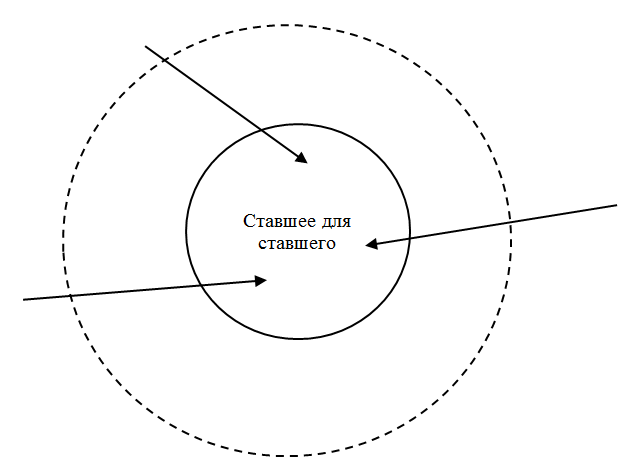
Схема 13. Ставшее для ставшего?
А где же «великая отгрузка мысле-активности …?»
3) Внутреннее пере-ставание ставшего.
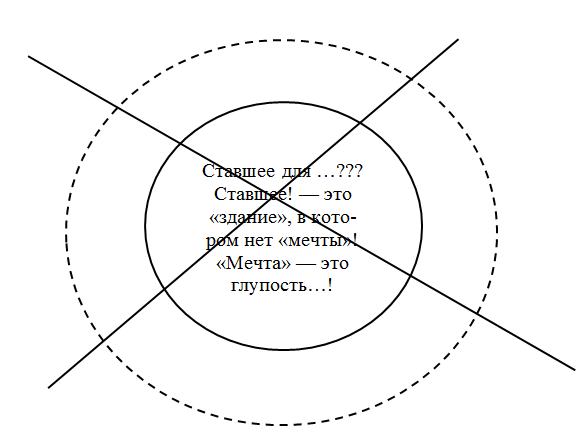
Схема 14. Ставшее для всех???
Каждая ставшая мысль, предположительно и очень условно, в свое время находится в одной из этих точек. За этим следует завершение рассказа (смыслов, норм, ценностей, институтов…). Идет «завершение» представлений о благе. В дальнейшем идет забывание и другого бытия, а также и иные кризисы. Что бывает после? Окончательный конец, новое начало или «новое межвременье», или «какой-то …изм на практике», или все сразу на разных участках? Что дальше?...
Все описанное в разделе определенно связано с проблемой интеллекта. Содержание (центр — периферия) имеют все существующие ставшие мысли, но и не только, это также относится ко всему остальному — к «единицам» мысли и другим аспектам на каждом участке.
Оценивая интеллект в каждом и в каждом существующем, нужно предположить, что такая «сущность» существует «везде». Но разница между «ним» — это различная его встроенность в мышление, то есть содержание присутствующего зависит от участка рассказа и его особенностей. При этом, чем ближе к центру ставшего или чем дальше к не-мыслию, — тем более существеннее и значительнее представлены определенные мысли вплоть до полного непонимания такового вне-учения.
2.3. Ставшее и рассказ ⇑
Этапы путешествия ставшего:
1. Фиксация, схватывание и борьба за становление. Опережение на локальной отраслевой «площадке».
2. Расширение рассказывания «в пространстве и в отрасли», а затем определение этого. Победы на «локальной» площадке.
3. Выход и контроль над своим-ново-обозначенным «пространством». Победы на локальной площадке.
4. Выход на общее «пространство» в качестве ставшего единственного рассказа.
5. Стремление к становлению. Борьба с первым, вторым и третьим рассказом… за ставшее место в качестве? Борьба с новым вторым… Борьба с очередным первым, вторым, третьим… Конец противостояния со вторым. Закрепление.
6. Удержание.
7. Подтверждение.
8. …?
Конец всегда определен своим началом.
Отметим обычную определенную черту стержня любого-обычного ставшего[160] — его цельность, преемственность, обновляемость, новизну, воспроизводство, современность, цельность конструкции, конкурентоспособность, стабильность, эффективность участия в игре, «основание за горизонтом» и т. д., что и позволило игроку выиграть все локальные противостояния в своей отраслевой площадке, стать ставшим, а затем и первым ставшим. Предположим, что интеллект — это значительная часть инструментария, который позволяет воспроизводить мысль определенного значения, а также дает возможность играть, а иногда и выигрывать соревнования.
«Разглядывая» стержень еще «до образования», а затем и само существование, нужно помнить о значении различных «рассказов», где речь идет «о строительстве» чего-то более совершенного по сравнению с тем, что уже представляется как-учение. При этом «основателями» и «обработчиками» мыслей можно предположительно считать именно активности, которые сооружали нечто новое для своей реальности. Популяризаторами можно считать представителей, а лабораториями, в которых идет апробация различных способов поиска, — различные «конструкции». Затем это все находит воплощение в мыслительной плоскости. При этом стержень — это не просто механический слепок, это не спекулятивное желание — все это имеет другие основания, это значительный процесс, начало которого неизвестно.
На каждом «этапе» возникают определенные мысли, а в последующем появляются новые рассказы для решения «актуальных» для каждого периода вопросов. Старые учения остаются и развиваются в соответствии с вызовами времени. Постепенно нарастают дополнительные функции и возникают отраслевые представления для решения прикладных задач. При этом постоянно происходит процесс заимствования и подражания всему этому в сущем.
Сталкиваясь с какой-либо проблемой, которая стоит перед ставшим, возникают мысли о решении, такие истории затем развиваются в нечто конкретное, после решения возникает возможность поддерживать воспроизводство и продолжать размышлять на предложенную тему, конструируя новые рассказы.
Тактическими активностями могут быть разные…, но суть не в этом, а в том, что существует круг мыслей и вопросов, которые связаны с желанием участвовать в рассказе, становясь рассказом и при этом продолжая мыслить. То есть для реального воспроизводства-существования конкретного «интеллекта» необходим «субъект обслуживания», а когда нет этого, смысл в функционировании интеллекта исчезает.
3. «Продукт» интеллекта ⇑
Результат (итог) любой активной субъективизации — это определенная мысль. Основная «производственная» деятельность интеллекта — это пере-рассказывание «рассказов». Но что может предложить активности такой интеллект? Техническую цель (стержень) и логику участия в непростой игре. Предложим схематически следующую типологию[161] представленного (Схема 15).
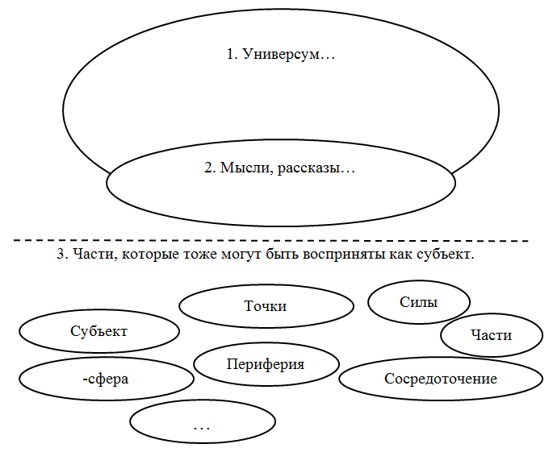
Схема 15. Виды представляемого
Еще раз отметим, что форма, структура не имеют никакого значения, то есть все это второстепенно, главное то, «для кого и что делает интеллект», под это и выстраивается все остальное.
В «действительности» «субъекта» «присутствуют» «процессы», и для достижения «понятных результатов» необходимо осуществлять «толчки», и «техники» «усиливают» подобное в разы. Например, для влияния на значительную сосредоточенность существования необходимо создать сначала «смысл», а затем и мощный, широкий «канал», сила которого была бы соразмерна поставленным задачам.
На следующем очередном этапе предположительно возникает и постоянно повторяющийся 4-й тип (Схема 16) .
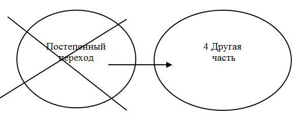
Схема 16. 4-й тип
Оценивая интеллект по продуктам, можно выделить два типа:
— для решения задач интенсивного роста;
— для решения экстенсивных проблем.
Конечно же, можно выделить фундаментальные, прикладные… мысли, а также указать на «схемы»…, но это все несущественно. Скорее всего, все это «не продукт», а его форма оформления, способ формализации «рассказа» и т. д. В таком значении можно выделить также и такие «склонения» мысли, как «модель-схема-акт». Но все это не позволяет понять логику «производственной деятельности».
Сведем «к простому», а также отметим два основных продукта для любого абстрактного активного, которые производит интеллект (Схема 17):
— «рассказы» «интенсивного длящегося», то есть перспективы и способы технического «движения»;
— «рассказы» «экстенсивного воздействия».
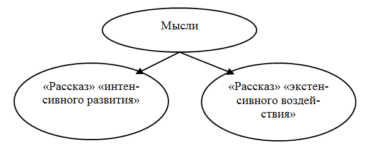
Схема 17. Основные мысли
Эти два простых «рассказа» могут распадаться на десятки, сотни и тысячи других уточняющих и расширяющих повествований. Например, это могут быть мысли о развитии и тенденциях вообще; о необходимости совершенствования той или иной «отрасли»; о «действиях» игроков и их планах; о «способах» становления и т. д.
Соединим мысли и активности:
1. Для ставшего — это может быть «предложение технической цели»; корректировка такой технической задачи; прогнозы и перспективы развития «игры» на ближайшие большие и малые периоды; способы выигрыша, участия в игре и т. д.
2. Инструмент для части, а также рассказа (направления), части, … Например, для отдельности — это «видение будущих перспектив в целом». Для представляемого — это «проект отдельной комбинации»; долгосрочный план продвижения к точке; активность в долгосрочной перспективе; разработка правил. Для части — это «способы формирования субъектности и перспективы на ближайшие периоды».
3. Инструмент для обеспечения работы какой-либо «сосредоточенности»… или всего того, что может быть воспринято как активность. Это может быть: сумма, часть, точка, сила, периферия… Например, это перспективы развития на ближайшие и длительные дистанции; преобладание в «сфере» или «отрасли», которую заполняет представленное, то есть интенсивное почти-участие; изучение других; разработка определенного вида мысли. Для обычного сосредоточения — это, например, концепция; значение определенного вида и инструмента воздействия; разработка определенного вида инструмента. Для смыслового взаимо-участия — это может быть сама разработка такой мысли или какого-либо взаимодействия.
4. Для общей части — это, например, рассказ о путешествии на различные периоды или решение вопроса «о том, куда и как можно направить мысль». Это также может быть «представление» о том, что можно предложить различным мыслям для их собрания под иное предназначение, то есть формирование из них другого сосредоточения.
Замечания и прикладные вопросы.
— Возможна любая фальш-классификация, но все зависит от представляемого и вида мыслей для него. Соответственно, «от активности обслуживания» и «вида рассказа» можно говорить о внутреннем содержании, структуре, форме функционирования интеллекта и других особенностях.
— «Побочных» мыслей, которые определяет интеллект, может быть сколько угодно, но важным остается только основное представление о мысли и вырывании.
Итак, предположительно все[162], чтобы быть в рамках возможностей интеллекта, должно иметь «активное» состояние. Причем, если средой не достигнута сосредоточенность, то применение интеллекта в той или иной «области» теряет смысл и нужно переходить к обычному типу линейных «размышлений», что полностью раскроет содержание или как-либо иначе решит присутствующую длящуюся неясность, задачу или тотальную неопределенность.
3.1. Определенный интеллект ⇑
Определенный интеллект существует для обеспечения стремления к ставшему. Причем такие сущности в полном масштабе продолжают действовать только там, где отравляется «центральный» культ (Схема 18).
Все предположительно так и выстраивается, как это указано в Схеме 18.
— Вначале технически присутствует инициатива-по-требность[163] со стороны части (или отдельной активности), а затем это все находит отражение или проекцию, которая становится практикой. При этом, возможно, источник и движение возникают иначе, но что там вначале — увы, это неизвестно, есть только гипотезы.
— Для обслуживания рассказов и стремления к своей «мечте» и возникают различные инструменты: мысли, части, компосты...
— При этом интеллект в таком движении к цели выполняет определенную функцию и занимает определенное положение[164], которое указано ниже на Схеме 18.
— Впоследствии, при разворачивании «всего этого…», происходит движение всего представленного, а также и его отдельных «образований», частным интересам которых служит интеллект, предлагая разные «образы» для эффективного технического движения к «цели».
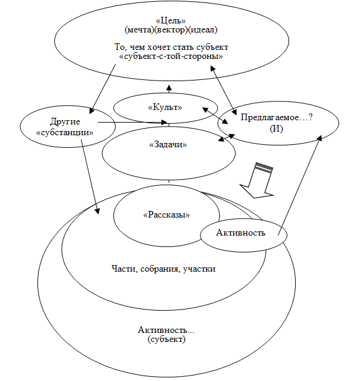
Схема 18. Интеллект в схеме
Определенные интеллекты схожи между собой. Схожими являются причины их возникновения, то есть это инициатива той или иной части, хотя в «конституции» это может и не присутствовать, но в любом случае «инициатор» является создателем, а интеллект — его инструментом. При этом все остальные «черты» зависят от потребностей конкретного «представленного», а также истории конкретного становления, мировоззрения его составляющих и активностей, возникающих вопросов и запросов и других причин и условий.
3.2. Взаимодействие частей ⇑
Ограниченно рассмотрим проблему взаимодействия мыслей.
— Слабое взаимодействие (Схема 19) — это простая схема взаимодействия с помощью конкретизации себя в границах частей через предложение рассказа-(мысли) или его нюансов активности. В таком значении интеллект является инструментом эффективного ведения такого экстенсивного взаимодействия. Выполняя роль того инструмента, который спекулятивно работает с «целью вообще», выделяет актуальные «для современности» «ее нюансы», а также согласовывает это со взглядами частей, которые интеллект «обслуживает».
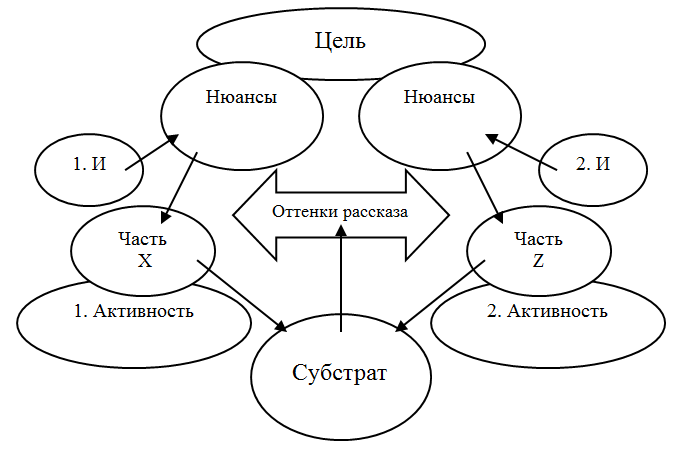
Схема 19. Слабое взаимодействие
При этом, кроме основных задач в рамках такого, интеллект решает массу других дополнительных потребностей, которые связаны с различными взаимодействиями.
Отметим, что в схеме упущен такой инструмент, как «рассказ», в формате которого идет постоянное открытое обсуждение цели, но его в данном случае можно включать в периферию взаимоотношений интеллект — мысль — часть.
Обязательным условием существования взаимодействия и интеллекта в таком контексте является схожесть установок частей внутри представляемого, когда это не так — речь о взаимодействии идти не может.
— Сильное взаимодействие (Схема 20). Когда части движутся к одной мысли, но видят ее по-разному (Схема 19) . Когда активности видят концептуально-схожую цель, но диаметрально-разную в своих установках и в практическом исполнении. То есть когда часть не видит свое место «в процессе», и такие мысли не могут договориться о следовании, возникает противоречие.
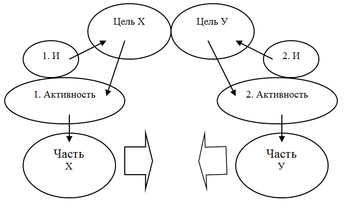
Схема 20. Сильное взаимодействие
Происходит трансляция стремлений и попытка сформировать вокруг себя сущность. При паритете и невозможности найти способ понять мысль возможно либо простое непонимание, либо значительное отрицание.
— Точка контроля[165] (Схема 21) — это противостояние микро-активностей для занятия ими ключевых точек для трансляции мыслей, все это может быть в контексте движения к цели или нет, но в любом случае предполагается имитационная «смена», хотя «телос»… не меняется.
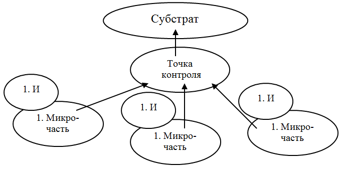
Схема 21. Точка контроля
Интеллект в таком контексте (Схема 21) просто существует как инструмент выработки «ограниченных сценариев».
— Перестановка (Схема 22) — это ситуация, когда разные мысли могут сформировать ставшее и не имеют ничего общего, то есть одновременно идет и замена стремлений.
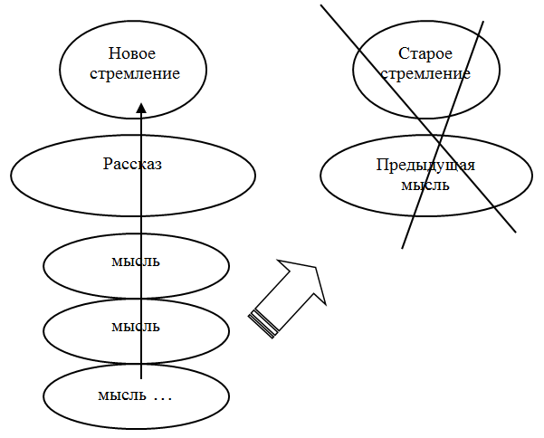
Схема 22. Перестановка мыслей
«Инструментом» может быть все что угодно. Причем возможно развитие этого на других уровнях — это ситуация, когда разные мысли не имеют ничего общего и пытаются перестроить друг друга «везде». При этом обязательно вовлечение субстрата и включение его. Отсюда такое соревнование «рассказов» может «происходить» на любом этаже и в любом контексте. Оценивая внутреннее состояние, всегда важно учитывать, что происходит, — это корректировка или замена, или же другой процесс.
— Противостояние из противоположных представительств. Такое соревнование может развиваться на различных уровнях, например, на «абстрактном», то есть пересказывание своих мыслей части, что позволит в будущем пере-настроиться на новые мысли. Это также влияние по любому рассказываемому или структурной части. Во всем этом или для обслуживания такового возможности для применения интеллекта не ограничены или, точнее, обусловлены «фантазией, средствами и способностями».
— Точка контроля как центр сосредоточения интересов. В ставшем именно такие точки контроля, которые возникают в результате «открытых» соревнований, являются центром «сосредоточения интересов» частей. То есть выигрыш соревнований позволяет активности получить доступ к реализации своего «рассказа». Причем различие между мыслями — значительно. Подобная «разность» снимается выработанными ранее «основными точками зрения о рассказе». Интеллект в таком контексте, обслуживая данные «представления», попеременно находится в двух фазах:
— в тот момент, когда какая-либо мысль не находится в точке контроля;
— в тот момент, когда мысль находится в точке контроля, интеллект в границах своей «компетенции» уже-на-прямую «обслуживает» сложившееся положение вещей.
4. «Прикладное» применение ⇑
4.1. Интеллект и источник активности ⇑
«Источник» активности является «тем», «кто» руководит движением, в таком ограниченном представлении этот источник тоже может быть воспринят как активность, которая либо выражает «интересы», либо с помощью различных механизмов ведет «это» к намеченной цели. В таком контексте и возникает «определенная необходимость» в интеллекте (Схема 23) .
Предположим, что такой интеллект может быть нескольких типов : в ставшем, в становящемся, в следовании и в не-экзистенции.
— Действительно-существуют и наделены полным функционалом только в любом ставшем. Такие части в основном обеспечивают существующие мысли. Заняты вопросами помощи в приятии и реакции на внутренние и другое происходящее. Если речь идет о ставшем — это те же «тотальные» инструменты, которые в контексте обслуживания рассказов вместе с ними косвенно участвуют в контроле-ви-брации, а, точнее, обслуживают такое участие части или активности от них.
— В становящемся и становлении такие инструменты достаточно развиты, но они не имеют тех масштабов, как в ставшем, так как цель, то есть ее размах — несоизмеримы. В таком формате можно говорить только о копировании некоторых возможностей центральных интеллектов с теми или иными ограничениями, которые выражаются в решаемых задачах, структурных компонентах и т. д.
— Предположим, что в не-экзистенции интеллект не выполняет никаких действительных функций и существует для имитации вибрации. Причем такие мысли не-просто не не-доразвиты, они отсутствует в полном смысле как то, что воспроизводит мысль.

Схема 23. Интеллект и источник активности
Итак (Схема 23), такой тип действующего можно применять в данной «отрасли» по четырем «явным» направлениям и по одному более абстрактному:
1) Это оценка того, из чего можно сооружать «мысли». Или это все, что предлагает совокупная среда, под которой можно понимать все, что можно завтра вовлечь для строительства сосредоточений.
2) Это сам «анализ» действующего, его возможностей, структуры, особенностей и на основании этого — создание «моделей улучшения и усовершенствования» данной совокупности.
3) Кроме того, это рассмотрение «происходящего» и на основании этого предложение различных мыслей по усовершенствованию подобного.
4) Оценка того, как субстрат воспринимает «происходящее», это также анализ «бытующих» мыслей и на основании этого — создание оценочных представлений того, какое все это оказывает действительное влияние. В последующем создание рассказов — для управленческих удовлетворений запросов частей и для более эффективного движения в заданном направлении.
5) Работа со смыслом, «разжевывание этого…», «глубинный» «анализ» такого содержания, а также корректировка и постоянная актуализация мыслей для более эффективного и постоянного включения в «контуры» понятия «сосредоточение».
Структурная «подчиненность» таких интеллектов может быть разная. Такие интеллектуальные части могут быть в составе активности, быть частью стандартных частей или просто самостоятельными сущностями, привлекаемыми извне.
Иногда такие части могут быть восприняты в качестве частей обычного характера. Отметим, что когда это становится таким не только по внешним атрибутам, но и по содержанию — это «конец» интеллекта, в результате остается только имитация подобных усилий.
Дело в том, что интеллект не может быть частью «схемы активности», — он может быть только катализатором. Если он превращается в часть механизма, вся эффективность исчезает.
4.2. Интеллект и воздействие ⇑
О применении интеллекта для развития воздействия можно говорить достаточно долго, но сосредоточимся на основном, оставив за рамками все частности.
В этой сфере перед интеллектом, который привлекается для решения данных задач, стоят два вопроса:
1. Как создать мысленные мощности в существующей точке (это воспроизводство и все смежные аспекты).
2. Как с помощью такого эффективно создавать «рассказы в…» — быстро, качественно и эффективно. Подобная задача может иметь вариации… и эта вторая проблема также будет корректировать и первый вопрос.
В рамках предложенных вопросов и протекает занятость интеллекта. Причем эти две проблемы могут иметь различные аспектные склонения — от поиска варианта эффективного ограничения и до выстраивания игровых мыслей в масштабах «пространства» или, например, создания «новых» мыслей и т. д.
Оценивая в общем рассказывание как искусство, можно сказать, что нет «мысли вообще», нет «рассказа вообще», а есть конкретная «сложившаяся длительность» и в ней — существующие типы и виды такого и те задачи, которые стоят перед активностями, их инструментами, а также конкретные технологии, методы… Не будем углубляться и описывать развитие такого искусства за последние длинные периоды, для этого существует масса другой литературы, кроме того, это будет достаточно непрофессионально и поверхностно. Также у нас нет возможности подробно раскрывать мысли каждого отдельного вида присутствия, которое стремится быть ставшим, для этого достаточно других профессиональных рассказов. Остановимся на том, что применение интеллекта в границах мышления нового поколения видится только в следующем формате.
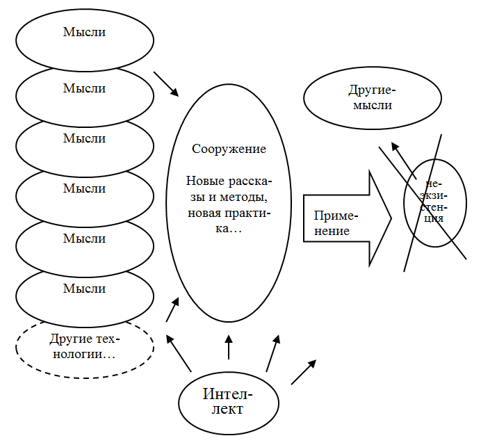
Схема 24. Интеллект и воздействие
Возможности для применения интеллекта могут быть задействованы по всем направлениям (Схема 24) и в рамках интенсивного развития в качестве мысли, а также в направлении экстенсивного рассказа.
При этом любое абстрактное рассказывание в рамках прикладного применения возможностей интеллекта можно изобразить следующим образом (Схема 25) :
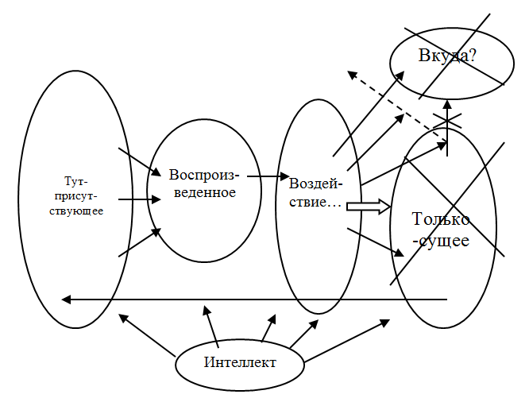
Схема 25. Интеллект и любой рассказ
При этом сами «части» другого могут становиться «средой», из которой будет сооружаться мысль.
Интеллект, с точки зрения воздействия, может использоваться (Схема 25) в различных направлениях:
1) Оценка совокупной «среды» по поводу возможности создания из нее мыслей.
2) Сооружение совокупных рассказов из среды для длительных повествований.
3) Сами мысли, то есть совокупность «мероприятий» и действий в пространстве и времени.
4) Активность может применяться в отношении чего угодно, по любой части рассказа.
5) Для мышления нужно изучать и рассматривать учение — все его присутствующее.
Создание «идеального рассказа» — это тоже решение вопросов экстенсивного противостояния, поэтому подобное также является проблемой для интеллекта.
Еще одно важное направление, которым занимается интеллект, — это «игры», то есть любое мышление — это определенная «игра». Поэтому достаточно важным является использование современных методик и знаний для изучения «игры». Кроме того, создание «симуляторов» позволяет моделировать различные «истории».
Мышление как «игра» в широком смысле — это «искусство». В каждую «эпоху» присутствуют «свои» знания и «специфика», но в любом случае принципы воздействия остаются схожими. Открытой остается «смысловая и отраслевая часть» осознания вопросов воздействия.
4.3. Интеллект и развитие представлений ⇑
Упрощенно схему развития представлений можно представить в следующем формате (Схема 26):
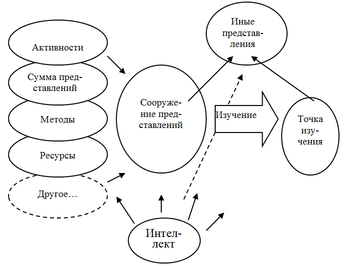
Схема 26. Интеллект и представление
В таком контексте или везде в схемах интеллект выступает как инструмент, который желает организовать развитие представлений, то есть на выходе получить следующие мысли. Активности в таком значении могут заниматься или работать со всеми указанными (Схема 26) структурными компонентами, стимулировать разработки. При этом работа интеллекта в данном направлении ограничена только воображением и потребностями тех, кто занимается решением такой задачи.
4.4. Интеллект: воспроизводство и распределение ⇑
Упрощенно схему перераспределения можно представить в виде потока неравномерного распределения между точками (с помощью различных механизмов). Кроме того, это также включает в себя абстракции, которые стимулируют или «сворачивают» то или иное движение.
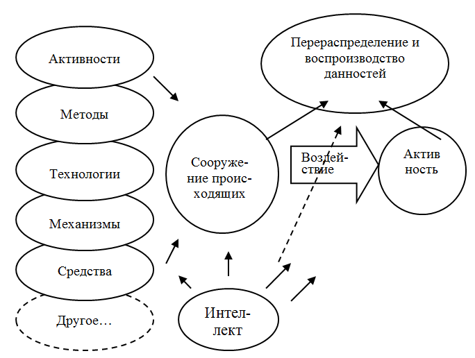
Схема 27. Интеллект: перераспределение и воспроизводство
Для участия в перераспределении и воспроизводстве необходимы активности, сопоставимые с присутствующими «масштабами». Таковыми образованиями, которые имеют и всеобщую специфику, являются части, которые по «содержанию», с точки зрения участия в перераспределении, могут быть чем и кем угодно. На нижних уровнях также существуют субъекты, которые являются структурным компонентом в тотальной активности. Все, что напрямую не является «инструментом», — это не участники, а инструмент, часть среды, система, условие, возможность…
Интеллект, который обслуживает тотальное распределение, может существовать в составе субъекта в качестве его подразделения или как отдельная часть, которая специализируется на определенных вопросах.
4.5. Интеллект и сосредоточение ⇑
Сосредоточение повлекло за собой возникновение масштабных активностей-. Такое сосредоточение тоже может быть воспринято как субъект.
В рамках сосредоточений могут существовать части, в функции которых могут входить: анализ, разработка моделей и концепций работы с «рассказами» внутри такого образования в целом. Но подобного недостаточно. Почему? В большинстве случаев «линейный» рассказ исключает представление о сосредоточении как «о субъекте». Отсюда возникают «формы» различных «умственных наслоений о фактах» — без какого-либо их осмысления и последующего проектирования чего-либо из этого. Каждая такая часть выполняет обычную рутинную активность по схематическому обеспечению какого-либо «подразделения рассказа» или занимаясь какой-либо отдельной мыслью. Но это никак не относится к тем задачам, для которых выделяется в нечто отдельное такая технология, как интеллект.
Для применения интеллекта в рамках «обслуживания сосредоточения» нужно выделить как простое понимание этого процесса (Схема 28) , так и основные вопросы, которыми должен будет заниматься «интеллект».
Первостепенным для любого интеллекта является вопрос мысли о существовании субъекта. Такой образ может иметь различные количественные и качественные характеристики.
Отсюда в рамках интеллекта возможны разные модели и проекты развития активности, а также способы преодоления последних вызовов и проблем.
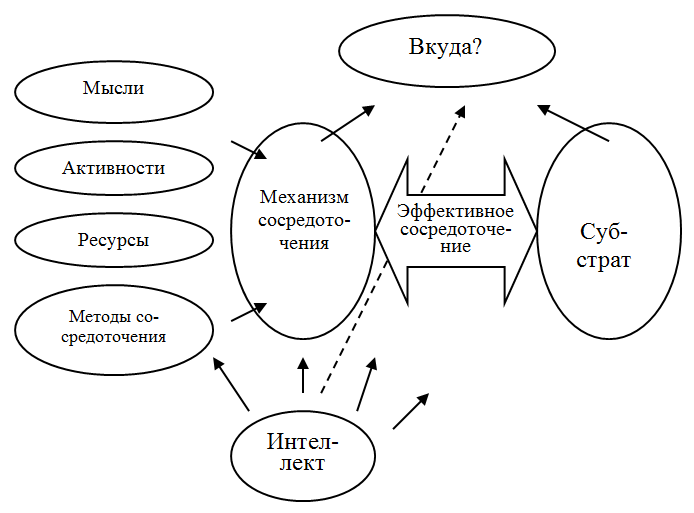
Схема 28. Интеллект и сосредоточение
Такой отраслевой интеллект может иметь самостоятельное существование, может существовать как отдельная часть для решения какой-либо узкоспециализированной проблемы активности. За интеллектом (Схема 28) может стоять любая «активность» — это может быть и отдельная часть в целом, и источник какого-то сосредоточения, и нечто находящееся вне этого и т. д.
4.6. Интеллект и периферия ⇑
Взаимодействие с периферией — это важнейшая проблема, стоящая перед любым фокусом или любым видом субъекта. Каждая активность предполагает разность внутреннего потенциала, где есть и центр мысли, и другое. «Взаимодействие» может подразумевать различные склонения. Возможны различные методы и механизмы «включения», а также и разные «перспективы» для остального с дальнейшим его «подключением» к центру активности.
Предположим то, что на практике могут встречаться два противоположных представления о периферии:
— случай, когда остальное для активности будет являться средой, местом изъятия без обратной компенсации мыслей;
— ситуация взаимоотношений, когда центр повышает качество и доводит не-экзистенцию до своего уровня.
Эти два способа мышления предполагают промежуточные точки и состояния. Привязка другого может быть разной по жесткости и осуществляться с помощью различных методов:
— жестких;
— мягких;
— манипулятивных;
— или одновременно через все перечисленные.
Обязательными принципами являются:
— монополия фокуса, которая может иметь различные аспекты, но в основном это монополия на совокупное вос-производство;
— «многократное превосходство» предполагает разность потенциалов активности, которое приводит к перетеканию. Такой обмен может быть равнозначным \ неравнозначным, а также контролируемым \ инициируемым \ управляемым \ самовоспроизводящимся процессом.
«Подключение» «не-себя» к рассказу может включать в себя различные действия, арсенал методов ничем не ограничен — это могут быть и прямое мыслие и другие косвенные методы влияния. Берутся исходные мысли (Схема 29), из этого сооружается все что угодно, в последующем это применяется для взаимодействия с не-экзистенцией.
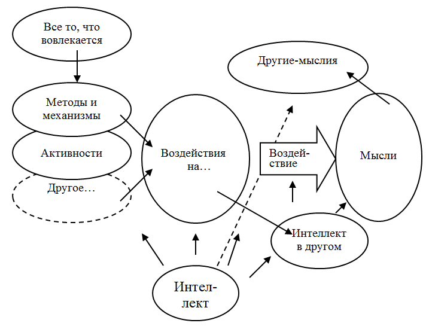
Схема 29. Интеллект и периферия
Суть Схемы 29 выражается в создании механизмов, позволяющих воздействовать на мысли.
В контексте проблемы «интеллект и периферия» существуют концентраты двух типов: в фокусе и в следовании.
— В фокусе — выступают в роли производителя мыслей, что затем становится механизмом работы с не-собой.
— В следовании не производят никаких мыслей и чаще всего являются трансляторами рассказов.
Итак, проблема сущего является достаточно важным вопросом для себя-активности. Для работы с этим «объектом» его изучают и разрабатывают методики взаимодействия и т. п. В таком контексте может действительно присутствовать или работать только интеллект, который находится в мыслии.
4.7. Периферия и центр активности ⇑
Сложные отношения центра и периферии активности — это всегда процесс «кто кого?». Скорее всего, процесс двунаправлен, то есть происходит «постоянное взаимодействие» этих двух условно выделяемых сущностей активности. Рассмотрим несколько предположительных ситуаций «взаимодействий центр-периферия» в рамках представлений «о росте активности» и «ее возможной последующей деактивации». Развитие ставшего — это процесс, в который вовлекается значительное количество «всего из среды», иногда это растягивается надолго. Отдельная мысль ограничена во времени актом и не всегда может осознать весь процесс.
Условно можно предположить несколько ситуаций взаимодействия центра и периферии.
1. Ситуация первая: центр «активен» и движется «на» периферию (Схема 30) .
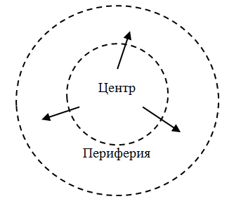
Схема 30. Центр движется «на» периферию
Только «мысль движения к другому», только «предложение» «по переустройству мыслей» позволяет активности двигаться на границы, воспроизводить колебания, заполняя собой все во всех значениях. Когда «система» работает именно так — все движется от точки «центр».
1.1. Замкнутый процесс (Схема 30.1) . При этом процесс может повторяться много раз и быть замкнутым.
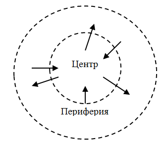
Схема 30.1. Замкнутый процесс
Процесс взаимодействия, когда идет взаимный обмен внутри активного. Когда ресурсы разного состояния движутся в двух направлениях. Все части кровеносной и других систем работают стабильно. «Тело» и его основные системы взаимодействуют «правильно». Но так не может длиться вечно, в итоге процесс остановится и начнется другая стадия.
2. Центр слабеет , и периферия движется в центр (Схема 31) .
Когда центр перестает воспроизводить активные мысли, все поглотит энтропия. В результате все вернется в первозданное состояние, если в это время другой не станет самостоятельным действующим.
Сумма производимого каждым активным — это и есть «статистика» и «тело». Это все складывается в ставшее и действующее. Остывшее время — это периоды пустоты, периоды отсутствия активности. Такие времена — это не-ставшее сущее. Когда такое не завершается новым мыслием, за этим ничего не следует. То, что находится на границах, движется в уже-не-культ, «переваривая» его.
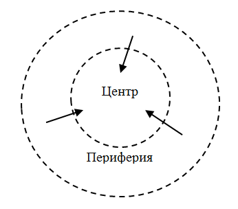
Схема 31. Периферия движется в центр
3. Рассказ слаб и с помощью различных «мыслей» пытается оттолкнуть пространство. Рассмотрим методы:
— Замыкание в культе. Когда идет затухание, активность перестает заполнять собой пространства — идет обратный процесс. В этот момент фокус может принять решение механически ограничить движение другого внутрь.
— Перенацеливание пространств — это ситуация, когда активный опытен и достаточно точно понимает и свое содержание, и состояние пространства, и те процессы, в которых он участвует. Скорее всего, это переход к другому действующему с другим содержанием. Такой активный может создавать условия, которые позволяют во всех смыслах перевести пространство в другое состояние. После чего затухающее будет включено в процесс по-другому. При этом не-ставшее может решить, стать активностью или противопоставить себя бывшему в каком-либо варианте. Что дальше? — «партий» может быть множество. Подобное взаимоотношение активности и другого требует от активного — признания существования не-себя. То есть, если в нормальной ситуации не-ставшее — это часть ставшего, которая постоянно приобретает определенные качества, продуцируемые в культе, то в последней ситуации нет никакого целого. Есть игра, в которой существуют две (и более) противоположные позиции, причем иногда игрок сущее может и не понимать, что активность — это не то, куда надо стремиться, а это другое. При этом мысли про «это и другое» всегда витают в своем пространстве.
4.8. Выводы к частям 4.1.-4.7. ⇑
Прикладное применение интеллекта — это процесс включения данного инструмента «в цепочку» для достижения определенного, понятного результата мыслия. Причем та или иная «область» может иметь свою специфику, но принципы остаются общими (Схема 32) .
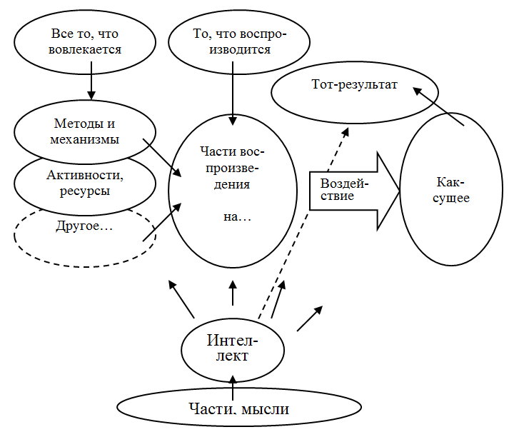
Схема 32. Интеллект и «прикладной» процесс
Кроме того, несмотря на то, что линейная, прикладная схема (Схема 32) в некотором смысле «съедает» интенсивно-экстенсивное значение интеллекта, но, в любом случае, оно проявляется на всех ее участках.
Отметим, что чаще всего «за спиной» интеллекта стоит та часть, которая находится на стержне движения «к-куда».
Ошибка — это то, когда интеллект берет на себя или на него возлагаются функции «непредложения методов по интенсификации процесса», а «прямое участие в мыслии». Интеллект — это только механизм мышления, который позволяет ускорить процесс развития рассказа, то есть это определенный катализатор роста и развития мыслей, а не сам механизм мыслия. Это ни в коем случае не «инструмент воздействия» и не то, из чего сооружают такой механизм.
Чем «дольше» работает интеллект в том или ином направлении мыслия, тем выше его потенциал, сумма произведенного, опыта активности и возможностей для движения в любом-том направлении.
5. Другой тип ⇑
В каждом «периоде, отрасли», в любой субъективизации в результате очередной усталости от существующих констант возникают несогласности с присутствующим положением дел. Причем такие несогласности не всегда вне-, чаще всего они включены в воспроизводящуюся активность. Такое несогласие вызывает различные интеллектуальные позиции. В последующем возникает определенный поиск «новых» решений для разрешения не-очередных-существующих-существенных противоречий. Вокруг таких решений-мыслей могут формироваться определенные сгустки. Далее это может стать новым процессом. Присутствующее несогласие может быть связано с различным происходящим, например, со сменой активных, старостью рассказа, изменением среды, усталостью, новым рассказом, надвигающейся угрозой… Таковым может являться или казаться все, что «может придумать себе» активность, но, как всегда, не может себя вычленить из происходящего, то есть активность свободна в своем интеллектуальном прозрении, но в остальном она только еще-участник, отсюда такая невключенность имеет определенный привкус. Поэтому то, что «сегодня» кажется неразрешимым, важным и неопределимым после определенного пробуждения и (или) в результате завершения ума, становится несущественным.
Представители, представляемое, представительства… Новые части, старые части, контр-части, другие части… Цели, мысли, взгляды, убеждения, ценности, идеи, верования… Рассказы, истории, повествования, учения… Мыслия, рассказы о рассказах, мысли о мыслиях, мысли-не-мыслия… Противоречия, согласия, взаимоотношения, обсуждения… Акты, откровения, блуждания, сны, помешательства… Все это — значительная вибрация присутствующего в совокупности и в каждой «активности». Из всего этого присутствующего возникают различные вихри и водовороты «процессов», которые можно предположить, выявить, заметить, описать, понять, отрицать. Концентрация этого «после» может быть тем, что описывается словом «рассказ» или «какой-то рассказ». Для понимания этого, что уже есть, нужно изучать некий «ставший» «рассказ», который может только в ограниченном значении существовать как линейное повествование. То есть в любом случае нужен «очередной» «калейдоскоп», через призму которого можно взглянуть на разворачивающуюся перспективу с той стороны (очередной рассказ о рассказе, и — далее по кругу). При этом то, что считается «позитивным» рассказом, соотносится с таковым в определенном, но не в прямом значении.
Итак, присутствует многообразие «происходящего». Это многообразие каким-то образом через «какое-то понимание» можно осознать. При этом «о нем» можно «что-то» знать, но что означает «это знать» — будет оставаться загадкой. В любом случае можно предположить наличие сгустков и турбулентности за этим. Противоречие таких сгустков может иметь значительный масштаб и влиять на последующее происходящее, все будет зависеть от размера присутствующего уже-рассказа.
Если говорить про постоянную-очередную-ставшую-ситуацию, то можно гипотетически предположить назревание очередных огораживаний мысли. Опять уставшее учение, в котором основным приоритетом является извлечение преимущественных значений, а достижением — сумма наличествующего — снова изживает себя. Исчезает предыдущее и мысли о нем, а вместе с ним различные предыдущие рассказы и сосредоточения. Существует преддверие нового разговора, который снова приходится сдерживать.
Какое оно, это ново-очередное блуждание? Можно гипотетически представить разные воззрения и точки зрения на его содержание. Но таких «мыслей» всего несколько. Вопрос в том, кто будет находиться на вершине таких рассказов и что будет с остальным? Рисуемая довольно красочная картина может оказаться не-мыслием. Все очередные[166] надежды, все мечты и идеалы — все может быть забыто… Открытыми остаются вопросы об устройстве такого повествования…
Вот тут и возникает мысль о разговоре, который будет определять другие горизонты (Схема 33) . Начинка — это некие «другие» мысли. Но неразрешенным остается вопрос о возможности «механического» запуска такого мышления.
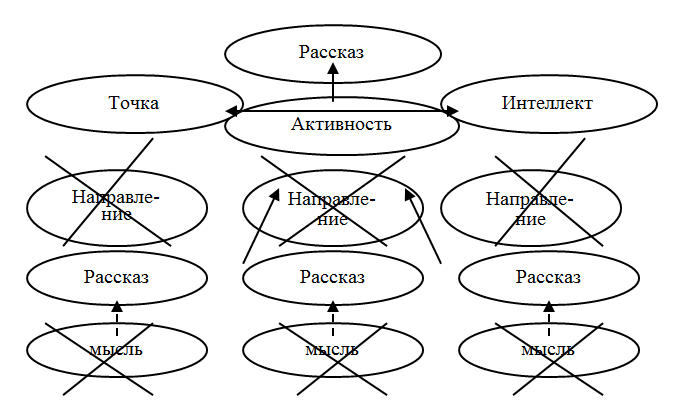
Схема 33. Иной рассказ
В любом случае… нет необходимости отвечать прямо и определенно, что представляет из себя сюжет. При этом историй в таком контексте может быть «не-сколько» угодно, рассказчики ограничены только фантазией и изощренностью собственного воображения. И, опять же, присутствует проблема определения источника активности, его скрытости и возможности работы с ним «через технику» и ее относительную бесполезность в таком значении.
6. Дополнительные вопросы ⇑
6.1. Интеллект и аналогическое взаимодействие с любым ставшим рассказыванием ⇑
Установим, что интеллект не дополняет и не дублирует работу различных рассказываний. Интеллект использует как фундамент различные мысли (и другое). Ставшая мысль предоставляет позитивные мысли и воспроизводит «схоластические» фундаментальные рассказы. Достаточно общую систему взаимодействия ставшей мысли и интеллекта рассмотрим в Схеме 34 .
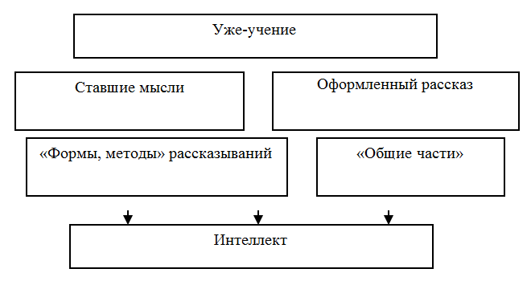
Схема 34. Интеллект и ставшая мысль
Итак, как видно из Схемы 34 , интеллекту от ставших мыслей необходимо определенное количество «данностей и данных», которые возникают в результате проигрывания присутствующего рассказа, то есть интеллект может использовать все, что выработано в исполняемом рассказе и другими для достижения своих результатов. Это могут быть как методики, так и само «тело» мыслей, но это ни в коем случае не делает интеллект неким продолжением или еще одним типом ставшего.
Отметим, что интеллект может взаимодействовать со всем, что есть в рассказе, — это касается не только уже-культа, но и всего что-сущее, то есть в таком значении интеллект — это косвенный потребитель. При этом он также является таким же «потребителем» и в отношении других всевозможных присутствующих, из которых черпает необходимое для своего функционирования. Например, если в результате становления и воспроизводства в «присутствующем» есть определенные мысли и др., а, кроме того, у активности возникают определенные запросы, все это будет взято за основу и на базе этого будет произведен необходимый «продукт». В этом заключается и гибкость интеллекта как инструмента, который для достижения уже-своих целей вовлекает все, что предоставляет «среда» в тот или иной момент своего становления. При этом и ставшее может поставлять нечто как ресурс для интеллекта, и интеллект сам может воспроизводить то, что станет «цементирующим материалом» для активности.
Причем в большинстве случаев при взаимодействии с рассказанным интеллект — это только потребитель. И между ставшими мыслями и интеллектом не устанавливается обратной связи. Некоторые единичные случаи не позволяют говорить о взаимной выгоде этих присутствующих, то есть и ставший рассказ, и уже-культ всегда с некоторым недоверием будут относиться к подобному «участнику».
6.2. Ставшие мысли ⇑
Речь идет о «простейшей» методике «работы» интеллекта или о «ставших мыслях». Кроме указанной, присутствует масса других практик разглядывания разного, которые зафиксированы большой практикой[167]. Методика «ставшие мысли» — это определенный способ движения структуры и всего, что вовлекается для изготовления «ставшего», то есть это методологическая сумма, которая позволяет каждый раз получать похожий результат при разных условиях и различном необходимом конечном продукте. Или это определенный «способ» производства рассказа, который еще можно называть «ставшим». Согласно такому мышлению, «все» произведенное в уже-рассказе может выступать в качестве ставшего, как сам совокупный интеллект, так и отдельная мысль. При этом «ставшие» мысли чаще всего — это уже отсутствие чего-то нового, это сумма, собранная из ранее произведенного, то есть это повторение воспроизведенного. В таком способе мышления существует определенный изъян — это отсутствие оригинальности и постоянная шаблонность, но там, где присутствует суммарный интеллект, а также произошло становление рассказа, другой способ производства мыслей «почти невозможен» (запрещен). Но, конечно же, это все не исключает исключения, то есть того, что выходит за границы «глупостей» «причины и следствия».
Отметим, что «становление мыслей» в одной «деятельности» — это одно, в другой — это другое, а когда речь идет о какой-то части — это совершенно третье, но методологии остаются общими для всех видов мышления.
Итак, между субъектом и интеллектом могут возникать отношения создания «определенных» мыслей из уже ставшего, которые позволяют оперативно создавать необходимый «продукт», при этом планировать вовлечение необходимых ресурсов и требуемый конечный результат.
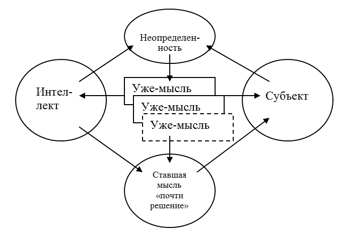
Схема 35. Ставшие отношения между
интеллектом и субъектом
В результате таких отношений создается «поток» и возникает та конвейерность, которая и является ключевой чертой «ставших» отношений интеллекта и субъекта ( Схема 35 ).
6.3. «Содержание» интеллекта ⇑
Конкретное содержание реализации интеллекта будет зависеть от специфики, истории возникновения, потребностей субъекта, под которые воспроизводилась такая функция. Но в любом случае каждый самодостаточный интеллект — это обязательные три составляющие ( Схема 36 ).
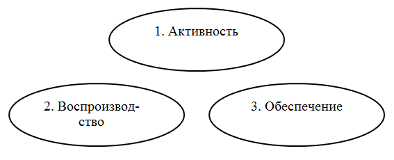
Схема 36. Три основных блока
1. Активность — это и связь с субъектом, и выбор направлений применения. Это все вопросы и по общему управлению направленностью интеллекта, и по договоренностям с «представителями» активности о производстве того или иного рассказа.
2. Воспроизводство — это создание тем-рассказов и рассказов для субъекта, то есть это конкретизация того, зачем существует интеллект. Подобное может происходить и в рамках ставшего рассказа, и в границах становящегося мышления, и других методик.
3. Обеспечение — это все, что напрямую не относится к производству мыслей, но это то, без чего «производство» окажется невозможным. В зависимости от присутствующей практики, сюда может включаться все что угодно…
Из предыдущих частей можно предположить, что интеллект экзотерически находится между ставшим мышлением и становящимися мыслями (Схема 37) . Каждая «отрасль» влечет за собой определенный взгляд на то, какой должна быть структура интеллекта, производство рассказа и т. п.
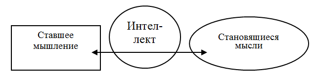
Схема 37. Расположение интеллекта в становлении
Становящееся мышление ( Схема 38 ). Предположим, что есть постоянное ядро и отдельные произвольные активности, которые возникают в процессе разглядывания «того, что есть».
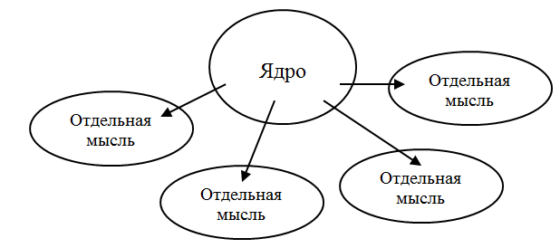
Схема 38. Становящееся мышление
Ставшее мышление ( Схема 39 ). Предполагает более простую и уже устоявшуюся схему организации работы с уже-определенным рассказом.
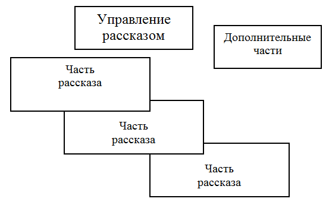
Схема 39. Ставшее мышление
При такой структуре мышления (Схема 39) все части существуют на постоянной основе.
Преимущества и недостатки разных способов мышления — разные (Схемы 38 , 39) . При этом не всегда желание может изменять «то, что уже есть». Иногда есть только такой способ рассказа, какой присутствует, и нежелание отдельной активности принимать такое никак не влияет на происходящее. Когда нет ставшего мышления — нет остаточных наработок мыслей, поэтому возникающее мышление быстро исчезает и не стабилизируется… Поэтому, например, ставшими субъектами со значительным опытом используется смешанный способ рассказывания (Схема 40) , который позволяет сохранять и базис в ставших частях рассказа, но и воспроизводить новые рассказывания (их активизацию и «написание»), что происходит в границах смешанных-межотраслевых комбинаций применения и ставшего, и становящегося. При этом в таком смысле и традиция, и новизна существуют вместе, не нарушая общую целостность структуры. Одновременно, что важно, после завершения мышления все наработки сохраняются. Но для создания такой интеллектуальной активности нужен значительный ставший субъект обслуживания и гибкость направляющей активности.
Смешанное мышление (Схема 40) может включать и первый, и второй формат рассказывания в зависимости от запросов, времени, места, этапа, а также специфики развития интеллекта в тот или иной период своего существования, то есть те вопросы, которые становятся постоянными, и та отрасль, которая становится основной — это ставшее содержание. А те акты, которые возникают периодически или в связи с новизной мысли или другими обстоятельствами, определяются через становящуюся активность.
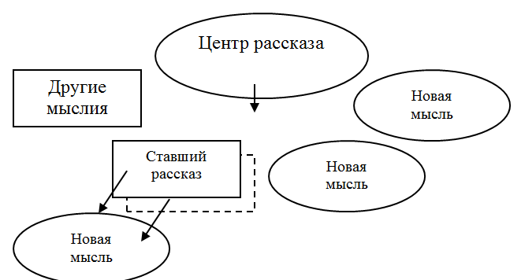
Схема 40. Смешанное мышление
Смешанное мышление превалирует у интеллектов, которые присутствуют в границах ставших субъектов, и таких интеллектов совсем немного. Причем в большинстве случаев, когда инициатором интеллекта является ставший рассказ, интеллект также может иметь подобную «окраску». Когда же интеллект возникает стихийно, по инициативе различных частей, которые не воспринимают себя в качестве оформленной мысли, то чаще всего такой интеллект будет иметь становящийся способ воспроизводства.
В отношении структурной самостоятельности можно предположить, что интеллект существует:
— в качестве самодостаточной активности, и в основном это тотальный интеллект;
— как структурная часть активности, как часть какой-либо части, то есть это подразделение какого-либо субъекта — предположительно это прикладной интеллект.
Причем каждый вариант имеет свои плюсы и минусы, но в любом случае интеллект — это не часть активности, это только катализатор, иначе все теряет смысл, и «конструкт» как механизм перестает работать и становится чем-то иным.
Структура интеллекта в контексте движения от центра активности (Схема 41).
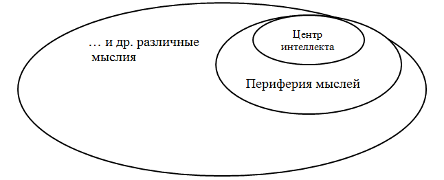
Схема 41. Структура движения от центра
— Центр интеллекта существует как постоянная активность. Причем постоянность — это переменная величина, так как интеллект может включать в свой состав для решения задач различные составляющие в широком значении слова.
— Периферия находится в пограничном состоянии и возникает в рамках становящегося мышления.
— Среда или потенциал — это все «поле» мыслей, возможности активности, к которым интеллект может «подключаться» по мере необходимости.
Также нужно помнить, что мышление, рассказы интеллекта связаны со словами «творчество», «поиск», «эпизод» и т. д., то есть не все так однозначно и логично — все находится в рамках и «поиска», и способностей отдельной активности, а также коллективных взаимосвязей. Поэтому достаточно важными для эффективности интеллекта остаются вопросы активного потенциала и «содержания», то есть, если не существуют «активности», остальное — просто ненужное «присутствующее». Хотя важным является все.
Одна из черт интеллекта (это касается и некоторых воспроизводящихся рассказов) — это объединение в одной точке активностей с различной конституцией, то есть инструмент в контексте выработки чего-либо может быть достаточно эластичной сущностью. Причем оперативность включения может иметь разное значение и зависеть от многих факторов.
7. Особенности интеллекта[168] ⇑
Уточним, что, согласно предположениям, высказанным в этом повествовании, интеллект существует для:
— «технического» конституирования любой активности «вокруг» через рассказ, и «работа» с этим «вокруг-рас-сказом»;
— корректировки участия в игре через повествование.
Существуют и другие «прикладные» функции, которые связаны с понятием «анализ», но в общем это не то, чем занимается интеллект. Насчет такой методики, как «анализ», все очень туманно — это больше фикция, которая подразумевает другое[169].
Для решения различных тематических и других проблем существует масса иных сущностей, то есть интеллект — это не сущностная и не просто некая схематическая часть, которая обладает определенным мыслительным потенциалом. И если даже интеллект в прикладном формате и служит для поиска «оптимальной мысли», то все же это не «образует» данное явление. Поэтому все остальные «части» — это не интеллект.
В действительности вне рассказов любых форм активностей присутствует имитация интеллекта. «Действуют» различные части, которые не являются интеллектом и воспроизводят деятельность, которая выдается в качестве рассказа. Такие «структуры» — это или непонимание сущности явления, или это «техническая имитация», связанная с тем, что нет таких категорий, как «стремление», «активность обслуживания», «частная задача»[170] и, самое главное, отсутствует «то», что образует подобное даже на простом уровне.
Отличие интеллекта от рассказа или учения (Схема 42). По своим характеристикам и задачам интеллект очень схож с таким явлением, как «рассказ»[171]. Но в действительности должно существовать различие, потому что если его нет, тогда отсутствует необходимость различать эти явления.
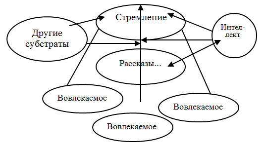
Схема 42. Разница между интеллектом и рассказом
Разница заключается в том, что интеллект технически работает с целью, точнее, только с ее осознанной! частью, но это в некотором смысле, в отличие от рассказа, отстраненный инструмент, то есть он не участвует в процессе и не вовлекает. Причем, когда это не так, тогда интеллект теряет свою эффективность, и о нем можно не говорить.
Автономия, независимость, самостоятельность интеллекта присутствует в том смысле, что он не входит напрямую ни в какие части в качестве управляемого. Иначе целесообразность такого стремится к нулю. Такой интеллект всегда должен иметь субъект обслуживания, но при этом он не должен сливаться с ним по причинам эффективности. Причем такая активность может быть не монистической, она может распадаться на «субъекты», «части», «другого» в качестве такого источника. Отсюда определенная форматом такой активности независимость, то есть автономия внутри выполняемых функций.
7.1. Перспективы понимания ⇑
Оценивая перспективы понимания интеллекта в любом сосредоточении любого вида активности, нужно предположить его продвижение в двух направлениях (Схема 43).
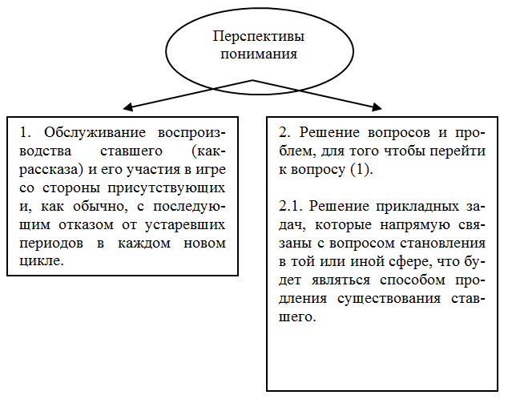
Схема 43. Перспективы применения
1. Тотальный интеллект является «лидером» решения вопросов «интеграции» «мыслей». При этом стремления для формирования всегда туманны, но уйти от «присутствующего» невозможно, поэтому цикл будет воспроизводиться снова и снова, пока не исчезнет последний стимул к движению. При этом очередной период (=) всегда связан с игрой.
2. Для решения «тотальных» вопросов (1) необходимо обдумывать различные «частные» мысли, поэтому уже в границах существующего тотального мышления возникают отраслевые части для решения различных «технических» вопросов.
2.1. Различные частные и прикладные мысли не всегда напрямую связаны с основным рассказом, но исключать их нельзя, так как в любом случае активность — это не моно-сущее, она распадается на множество различных актов. Поэтому для сохранения активности, сохранения первенства среди других повествований, для удержания позиций нужно быть самым «адекватным» и не только в больших периодах, но и в малых неопределенностях.
Опять же, в любых других частях и активностях интеллект присутствует либо как имитация явления, либо как осколочный прикладной инструмент обслуживания части, при этом с прицелом выхода всего этого в фокус.
7.2. Схема включения интеллекта ⇑
Завершив работу, повторим модель активного интеллекта (Схема 44).
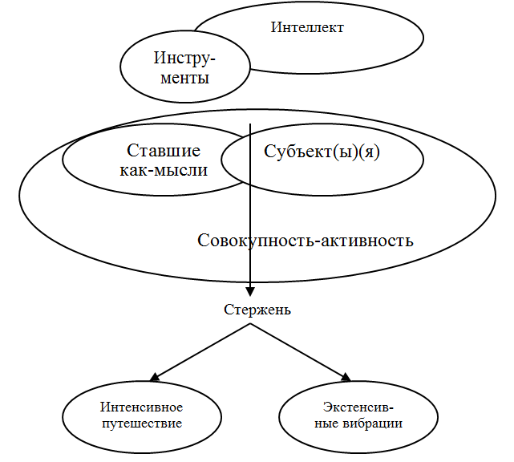
Схема 44. Схема включения активного интеллекта
Интеллект в контексте нарисованного конструкта (Схема 44) может двигаться в любую сторону и выполнять любые действия, но только в границах схемы. Изучать среду, изучать любую активность, ее содержание, стержень. Рассматривать вопросы, связанные с типами развития, и предлагать варианты технических рассказов. Такой инструмент может быть каким угодно, с точки зрения содержания и т. д., важно только выполнение двух основных функций, остальное несущественно и должно служить только этому.
Отметим, что везде, где будут условия для данной абстракции (Схема 44) , интеллект будет востребован как эффективный метод по разрешению подобных неопределенностей.
Сократим функции интеллекта до двух вопросов или предложений [172] для субъекта:
— технические предложения для активности по интенсивному движению[173];
— предложение для игрока по экстенсивному развитию.
Внутри выполнения вышеуказанных функций могут применяться различные известные методики. Но это все, так сказать, имеет значение только в практическом ключе.
Линейная работа интеллекта в границах взаимодействия с отдельным, если ее разложить логически, основываясь на Схеме 44, должна происходить следующим образом:
1. Изучение пространства рассказа, всех его особенностей, а по результатам — создание «мысли такой среды», которая будет зависеть от уровня интеллекта, а также потребностей активности.
2. Изучение самой активности, ее особенностей в качестве мысли, а также в контексте «личностных» характеристик, то есть в качестве активного элемента и участника какого-либо рассказа.
3. Создание «суммы» технических рассказов интенсивного развития активности в границах существующего.
4. Создание мыслей экстенсивного повествования в рамках существующих контр. Всегда нужно помнить, что в границах экстенсивного взаимодействия возможны любые манипуляции с тем, что есть, — это ситуации, когда с помощью различных инструментов выстраиваются комбинации, которые затем становятся частью игры и вбрасываются как-мысль для разрешения той или иной ситуации, то есть в рамках такого мышления «все» может выступать как «инструмент» для работы с «другим». В некотором смысле «широкая манипуляция ресурсами» является не совсем этическим методом, но именно эти методы доминируют в экстенсивных взаимодействиях.
Основная задача интеллекта — это «брать с-мысль», работать с ней, вычленяя из этого смыслы, актуализировать все это и передавать на периферию для связки в последующем всего этого в плотность, которая движется в заданном направлении. Причем подобное не исключает различные нелинейные подходы, а также выполнение задач по частям, с середины, с конца и т. п.
Для эффективности в каждом отдельном случае и под каждый уникальный случай должен выстраиваться «собственный рецепт» «рассказа», то есть может оказаться, что то, что является действительным, когда речь идет о какой-то уникальной мысли , не будет действительным для конкретной части . Причем, если «методики» и могут быть схожими, то все остальное «уникально» и распространяется только на данный технический случай.
А. Руснак
Рассказ о рассказе, интеллект и субъект
Підписано до друку 03.07.2018 . Формат 60x84 1/16.
Папір офсетний. Друк цифровий. Ум. друк. арк. 8,72
Віддруковано в Видавництві ТОВ «Аграр Медіа Груп»
04080, м. Київ, вул. Новокостянтинівська, 4А
Тел.: 044 361 53 06, e-mail: info@agramiedia.com
Свідоцтво про внесення суб’єкта видавничої справи
до Державного реєстру видавців ДК №3651 від 22.12.2009 www.agrarmedia.com
Ссылки ⇑
[1] «Остановленный» «рассказ» перестает быть, то есть становится не-мыслью, а чем-то другим… Заметим, что данная работа не является научной монографией, и не имеет прямого отношения к происходившему или происходящему, все это не более чем умственные построения в каком-то абстрактном пространстве.
[2] Тут, конечно, вопрос открыт…
[3] Разве что «машину-механизм-систему» для «решения» каких-то «уравнений», но это не интеллект в его последнем смысле.
[5] Кто это «был» и что было на самом деле — это загадка, но в общем это не важно.
[7] Отправляемся к какому-то Экхарту….
[8] Для исключенного включение — это какой-то сон. Есть разные исключения, включения и сны... Включение — это всегда сон, а сон — это включение.
[9] Включенный может даже не слышать запаха включенности, но это не значит, что такое отсутствует.
[10] «Показал» присутствие «включенности». Обычно «включенность» есть как-нормальность, а тут как раз «эта нормальность» — это «только фон», за которым «есть» «что-то другое».
[11] То, что «веет» над любым разговором Достоевского, Камю, де Сент-Экзюпери и других, и то, что требует перехода «к следующему».
[12] «Замечание включения» — это уже и есть акт отключения. Только этих «замечаний» может быть множество «видов». И вызывать такие «замечания» могут различные подглядывания из сознания. Разные «показывания» «такого» «замечающему» могут быть связаны с различными «ходами» сознания.
[13] «Разглядывание» «своей включенности», отстранение ее от себя, выделение ее как отдельно стоящей, разглядывание своей включенности как необходимости, разглядывание своей «истории», разглядывание себя-сейчас, себя-завтра, себя-переставшего. Разглядывание совокупной включенности. «Разглядывание того», как это все будет после того, как исчезнет разглядывание...
[14] Эту «музыку» можно только «играть», «воспроизводить». Ее «как бы» бессмысленно «анализировать», хотя можно и нужно делать в «акте после». Тут не поможет никакое философоведение, искусствоведение, литературоведение, историковедение, науковедение, математиковедение, физиковедение… Все это тоже очень нужно и позволяет узнать много о том, что такое «было или есть», но это не одно и то же. То есть или есть «состояние-практика-проигрывание»… «чтение каких-то нот, а затем проигрывание», или есть «анализ… и разложение нот» — но «это воспроизводимая музыка», это что-то другое… — «какой-то разговор о музыке», правда, иногда выдаваемый «как-музыка». И такого и другого достаточно. И в этом нет никакой «вульгарной мистики». То есть «состояние» не то же самое, что «рассказ о нем», но эти части не отрицают друг друга, они существуют рядом. Иногда «рассказ о музыке» позволяет перейти к проигрыванию музыки, но только иногда, а иногда «это все» работает иначе. Накопление «фактов» «о музыке» не является способом перехода к «созданию и воспроизведению музыки», «качество в количество или количество в качество» — все это очередные слабые разговоры, которые не есть состояния-акты. Конечно, для «осуществления самого акта» должно присутствовать множество разных «пред», к такому относится много чего, и сам факт присутствия того, кто будет осуществлять акт, ну и все его общее движение в направлении попыток осуществления «музыкальных актов» — это различные подготовки и пред-знания, в том числе и сумма познанных «фактов о актах». Итак, есть непреодолимая разница между музыковедом и практикующим музыкантом.
[15] «Взгляд мышления» сквозит и пробегает «через разное»; и в какой-то момент «оно замечает» «этот блуждающий взгляд», и в этот момент и происходит «вот этот акт» «мышления о мышлении».
[16] Такое же воздействие на дух и последующее за ним состояние оказывают отдельные произведения искусства и искусство в целом, а также и различные явления природы, «акты» судьбы и другое…
[17] Все это различные способы мгновенного «удара-гибели-воскрешения» «мышления», то есть это разнообразные «фиксированные» акты «остановки», «переключения», «перенацеливания», «отключения», «перезапуска» включенности в поток.
[18] Бурное развитие всего, на что направляется ум активного.
[19] Такое случается постоянно с каждым…
[20] И сидящие у реки с кремневыми топорами, и сидящие на берегу оживленной улицы какого-то полиса — это неважно («важно» только отсутствие «остановки» и тех, кто на ней).
[21] Стремление растворить любого «другого» как что-среду, попытки «выделить себя», попытки «зафиксировать свое быть» и другое — все это требует значительного напряжения, а затем иногда и тотального перенапряжения, что приводит к отключению, то есть выключению, затем новому включению в качестве чего-то иного для решения именно проблемы «быть сейчас».
[22] У него нет горизонта,.. точнее, горизонтом становится «все», на что обратит внимание мышление… забудем о предмете…
[23] «Медитации» Сократа не являются «основными», присутствует масса других практик.
[26] Что находится «с той стороны» «мысли»? Конечно же, это великая загадка, но если «угадал», «увидел» работает, то, скорее всего, с той стороны есть что-то «читаемое», при этом «как» и «что» — это загадка для включенных.
[27] «Выключение» — это не отсутствие «сознательного состояния». «Выключение» может происходить на фоне «присутствующей сознательности», и «такое» это «состояние», потому оно не будет иметь «остановленной остановки в слове».
[28] То, что «длится» после выключения.
[29] Как устранить включенность? А нужно ли? А возможно ли? А есть ли она?
[30] Акт включения — это мгновенный акт творения сначала в активности, а затем и в другом...
[31] То есть это знание ради знания, мышление для мышления...
[33] «В происходящем» после «актов освобождения» наблюдается высвобождение огромной «энергии», что влечет за собой развитие ремесел, знаний, искусств, торговли... и другого.
[34] Как бы усталость духа, почти как при какой-то старости, но только почти…
[35] Усталость от рассказа, усталость от смысла, усталость от путешествия, усталость от включения...
[36] Включенность, субъективизация, реальность…
[38] Смысл, остановленный в словах, понятом, принятом, закрепленном, записанном; или это уставшая, установленная и остывшая мысль.
[39] Если они служат им, а не кому-то другому. Потому что существование вне-включения — это либо полное растворение, либо другое включение, но в таком «включении» не будет никакой бывшей свободы и… далее по списку…
[40] Иногда «освобождение» предполагается именно в качестве отрицания какого-то конкретного рассказа или какой-то конкретной включенности, но это уже другой «вид» освобождения.
[41] Заметим, что каждый «участник включенности» имеет «право получить» «ту свободу» и «ее условия», которую предлагает именно «данная включенность», но от него как от «участника включения» требуют определенных «субъективизационных практик». Но проповедующий «радикальную автономию» считает, что он перешел «к уже другой практике», и вопросы включенности его интересуют только с точки зрения предоставления ему «условий-данностей» для «его особенного освобождения» без обратной связи.
[42] У Руссо и Ницше данный вопрос решается по-разному, но стремление одно и то же, то есть или стоны по счастливому вчера, а затем рев и набат, или это такая же смертельная скука от декаданса, бессмысленности полного вникуда, автономия от смысла, а затем бесконечная тоска по жестокому предыдущему включению. Причина любой смены — это не «какое-то… положение», положение — это причина какого-то возмущения, настоящая причина смены — это долго длящееся вникуда, которое вызывает то, что задние ряды выталкивают вникуда тех, кто спереди, иногда выпадая в абсолютное-в-никуда-всего, и наступающее включение может оказаться неожиданностью для тех, кто толкал, при этом включения может не оказаться в итоге вовсе. Но уже мудрый может направить тех, кто толкает в любое вкуда. При этом иногда-всегда непонятно кто, куда и почему стирает существующее вникуда. Причем всегда непонятно — это стремление к следующему или пред-предыдущему включению или невключение вообще? То есть часто непонятно, какое включение будет присутствовать или отсутствовать в итоге.
[43] Которое не предполагает крайнее напряжение сил для освоения практики «выключения-включения», которая также в обязательном порядке предполагает и исключение себя из включенности, причем необязательно в крайней форме, например, когда речь идет о научных собраниях.
[44] Критическая масса «радикальных автономистов» завершает любую включенность, что чаще всего наступает в последние времена, то есть одновременно растет масса и переходящих к практике освобождения, а рядом нарастает масса радикальных автономистов.
[45] Речь идет только о «высоких» интеллектуальных «силах», все остальное присутствует там в не-сущем, там, где присутствует неразличенная эссенция.
[46] Все это суть одно и то же для мысли.
[47] Конечно же, можно даже предположить, что сгусток включен в акт, и отсюда множество разговоров про интенцию, а также мысли о том, что она включает сгусток или не включает…
[48] Но помыслить такое «ничто» мысль может только как что-то, то есть как не-акт.
[49] Тут возникают намеки на «предметное мышление».
[50] Вот тут уже в мышлении возникает запах предметов.
[51] Которая не позволяет «остановить предмет», и такое, конечно же, очень неприятная вещь.
[52] Возможно, нужно по-другому интерпретировать Аристотеля, Аквинского, Спинозу, Декарта, Лейбница… и других, для которых нет вещи-мира и другого …, и тут проблема даже не в каком-то физикализме… а в большей степени в философоведах.
[53] Идем к Плотину и другим предшественникам и последователям…
[54] Тут к Хайдеггеру и другим…
[56] Время, пространство, энергия, системность… Время как пространство, пространство как время, гравитация как… Заметим, что все изложенное в абзаце, разделе и далее, никак не соотносится с фундаментальной теоретической физикой, все описанное только «какая-то» метафизика.
[57] Вибрирующая «точка», которая включает в себя «разное».
[59] Запрепарировать до последнего…
[61] Наиболее емкая и последовательная предметная логическая теория мира = сознания — это «Критика чистого разума» Канта со всеми приложениями и допущениями…
[62] Таких не-предметов бесконечное множество — точнее, это весь совокупный «язык» и, точнее, длящееся-быть-активного.
[63] А как же математика движения?
[64] Не путать такое с какой-то прото-эфирной глупостью…
[65] «Другой способ разговора» как очередная надежда преодолеть «предметный разговор», который ограничивает возможность понять «вязнущую текучесть».
[66] Других он не предполагал, но вся современная физика — это что? А разные «непредметные» состояния?
[67] Что-то из Шопенгауэра, Ницше…
[68] За этим словом, увы, нет предмета.
[69] «Предполагаемый» у Ницше?
[70] Диалог… диалогика, диалектика…
[71] Возможна любая другая мысль вместо этой…, такое берется только в качестве примера.
[72] Причем такое также предполагает какое-то невидимое.
[73] Кант «делал вид», что разговора о таких «предметах» нет…
[74] Предмет, смысл, содержание...
[76] Которое присуще, присутствует, расположено за, под, над, до и после… внутри… или внутри самой маленькой части, и даже являясь меньше, чем часть части... Как причина, как основание, как…?
[77] И то, что за ним и в нем, и до него, и после него, и в начале него, и вне его…
[78] Остановка, на которой никого нет…
[79] Очень значительных вещей, которыми можно «бить» по потоку.
[80] Звук-голос бытия, но разве оно живое? А что значит это «живое?» Дышать, понимать, видеть, ощущать, действовать, думать, осознавать, определять? Или что-то другое?
[82] При этом данный вопрос связан с таким явлением, как «рассказ» или «другой рассказ».
[83] «Сгусток-рассказ-часть», возникающий на протяжении многих становлений мысли и являющийся тем, что выдвигает и воспроизводит смыслы, символы, ценности, цели…, а затем вокруг этого — все остальное: практика, судьба, путешествие… При этом таких «рассказов» может быть достаточно, и конкуренцию между ними никто не отменяет.
[84] Великие музыкальные произведения — искусство в целом.
[85] Именно поэтому присутствующие попытки создать …логию сознания терпят поражение.
[86] «Направление» рассказа может быть любое, в этом и проявляется экзистенциальная сущность активного.
[87] И неважно, это еще как-активный или только уже-рассказ.
[88] Активный всегда направлен на «совершенствование своей активности»: чем значительнее такое совершенствование, тем значительнее и «тоньше» рассказы. Такие рассказы сложны, и понимание их требует значительного напряжения. Возрастающая сложность рассказа нарастает вместе со сложностью активного. Сложность рассказа воспроизводит тонкие состояния.
[89] «Мысли, направлению, цели, смыслу, субъекту, игроку…».
[90] Если удалось «выделить» какой-то рассказ в какое-то «кристаллизованное вещество», тогда такой рассказ становится закрытым для обычного прочтения.
[91] Смотрим очередную предысторию, предрассказ... старое повествование.
[92] Такое-окончательное понимание очень сильно «напрягает», и хочется туда, в сон…
[93] От этого можно отказаться, но оно не откажется от тебя…
[94] Желание или нежелание не имеет значения…
[95] Речь не о противопоставлении Диониса и Аполлона…
[96] В таком общем значении явление «интеллект» берется в качестве чего-то равнозначного понятию «рассказ» (не уточняется понятие «рассказ о рассказе»), а в последующем в повествовании они будут разграничены.
[97] Отметим, что схематическое ( Схема 1 ) «или включение субъекта в игру» — это достаточно условное представление. «Конструирование субъекта» и «игра» — это условно разное, то есть это не часть целого и не наоборот, отсюда, это независимые и равнозначные проблемы или условно самостоятельные процессы, хотя, скорее всего, это разграничить можно только в абстрактном пространстве.
[98] Вокруг субъекта есть «среда», поэтому субъекту нужно не только внутренняя концентрация, но ограничение своих внешних контуров. За этими контурами будет существовать другое, и оно может иметь субъектную форму. Встреча с этим другим — это игра.
[100] Формирование новых мыслей о путешествии.
[101] Речь идет об учениях-сущностях с похожей внутренней «конституцией».
[102] Игра не предполагает общей цели или новых «ступеней» процесса, а подразумевает только движение через распыление другого.
[103] Такое разделение имеет своим основанием ссылку на «ресурсы» развития, их источник — внешний или внутренний. Но это не раскрывает многие «механизмы», то есть «схема» достаточно условна или даже примитивна.
[104] Окончательная «известность» «представленного» — это конец…
[105] Попытка отыскать «единый» субъект = последующее какое-то (так называемое) сумасшествие того, кто отправился на такие поиски.
[106] Словосочетание тут взято в модальном значении.
[107] Оставим за скобками спор «номиналистов и реалистов».
[109] Речь идет только о мысленной конструкции или абстракции какого-то порядка.
[110] И никакое «— это…» не определяет в итоге ничего.
[111] В вульгарном прочтении, как некая «и-логия», как некая «механическая конструкция» сознания.
[112] См. разделы «Субъект и другое» и «Об игре».
[113] Причем «благо» все равно будет предложено, но оно станет очередным… и постоянно вечным… пока есть мысль…
[114] Но отсутствие предназначения — это тоже предназначение.
[115] Субъект, лишенный смысла существования или цели бытия, удивительным образом стремится в небытие, и способы саморастворения тут могут быть разные — это и прямой суицид, и различные другие способы само-затухания…
[116] При этом речь может идти именно об одном и том же. При этом сама «сущность!» всегда балансирует на границе неизвестного.
[117] Отметим, что девиз, как формулировка цели, не всегда соответствует ее внутреннему содержанию и «восприятию этого» в ту или иную эпоху, и последующей «интерпретации этого» «потомками» и тем более «исследователями».
[118] Одиссей — у Гомера, Мартин Иден — у Джека Лондона… и многие другие акты-«присутствия»… — все они идут «в том же направлении».
[119] Такие как бы «разные» «колебания» — суть одно и то же: стремление двинуться к тому, на что указано в разделе «Выключение-включение».
[120] Но затем все начнет возвращаться в начало (в распад)…, а затем снова…
[121] Действительно стремится к тому со всеми «склонениями».
[122] Но субъект как-ядро не найден…
[123] Увы, «моно» субъекта нет! Потому противоречия отсутствуют.
[124] От чего можно избавиться только через разрушение сознания.
[125] Табу на какую-то «-фагию».
[126] Или стремлением к какой-то солидарности, что затем может передаваться в стержень и становиться цементом для субъективизации.
[127] Присутствует постоянная какая-то «эволюция» солидарности, которая связана и с изменением субъекта после актов выключения-включения, и с последующим после такого развитием рассказа, но все это пока не запахнет очередным завершением.
[128] При этом абсолютная солидарность порождает абсолютную фагию и наоборот. Когда мысли желают слиться в абсолютной солидарности — это равносильно присутствию какой-то крайней фагии.
[129] Свободен, независим, сам-по-себе, но продолжаю быть включенным, правда, «с особенными условиями» включения…
[130] Содержание передается туда в стержень.
[131] Какая-то очередная «полифония»…
[132] Такая «сила» через время будет возвращать все в исходную, но уже другую точку.
[133] Отметим, что «математика», предложенная в данном разделе, имеет достаточно сомнительный характер и используется для «зрительного», «аналогического» расширения представления «об игре», и это также относится и к некоей «теории игр», которая тут не присутствует.
[134] Всегда есть субъект и другое! Субъект — это активность «где-то».
[135] «Игра» сложнее понятия «обычного противостояния» и других типов деконцентраций. Цель игры, как и противостояния — победить, уничтожив, но в игре подобное сложнее, чем в «простом» противостоянии, тут, кроме простого «вектора против», основного другого, могут выстраиваться различные комбинации, которые и позволяют в конечном итоге выиграть.
[136] С той стороны уже не что-субъект, а другой как-субъект.
[138] Уничтожить до конца, захватить высоту, получить доминирующее положение, поглотить, подчинить полностью или частично, раздавить в целом или в части, включить как инструмент или как функцию, расформировать, занять, направить на..., изменить способ и тип рассказывания. Причем это все может распадаться на различные классификационные механизмы и формы, а также «виды» «противостояний».
[139] При невозможности прямого столкновения игроков идет наращивание сил и консервация противостояния.
[140] В данном случае ее можно не учитывать.
[141] Не используется символ «сигма» для «объединения» суммы неравенств, для того чтобы зрительно показать «размер» игры.
[147] Смерть игры или завершение игры.
[153] «Мысли», когда у них есть свои представления, тоже могут быть восприняты как рассказ, и тогда субъект другого масштаба будет являться субъектом для представляемого другого уровня, и так до… конкретной мысли. Опять «схематизмы».
[154] Подобные мысли могут быть наделены различными функциями и выполнять в рамках рассказа различную роль, они также могут быть определены разным содержанием, но всех их вместе что-то связывает, поэтому это «части» целого.
[156] Все, что угодно, различные части, слои, фракции, инструменты, функции, образования. Все зависит от «фантазии, силы воображения...»
[158] Отметим, что, скорее всего, каждая «игра» — это сумма простых комбинаций и ходов, которые не рассматриваются. Игнорируются также второстепенные активности, которых включают в союзы для усиления. Не рассматриваем отдельные площадки, представим себе, что это все рифмуется к общему знаменателю.
[159] Оставим за скобками проблему «инструментов».
[160] Каждой действительной активности.
[161] Достаточно ограниченную.
[162] Речь идет о «расширении» представления.
[163] Свои мысли, которые тоже могут претерпевать определенную модификацию…
[164] Которое и показывает разграничение явлений-понятий «рассказ» и «концентрат», причем иногда нет смысла разделять подобное, потому что в действительности — это только различные функции одного и того же.
[165] Когда нет вкуда — это только «игра», которая кончается ничем...
[167] Нет окончательного метода-схемы-технологии-способа-функции-техники-практики «производства» «рассказа», а есть только свободно-длящиеся практики-медитации.
[168] В представленных разделах идет обобщение и повторение пройденного материала.
[170] Эти категории, по различным причинам, отсутствуют в мышлении.
[171] «Точка» «проговорения-активизации» присутствующего стремления, а затем и «путешествие» к такому.
[172] Такие предложения могут иметь различный формат и выражаться с помощью различных средств актуализации.
[173] Указанная функция гармонично входит как подфункция в функцию «рассказа», а это и совокупная «сборка», и «сохранение» конструкта.
———————————————————